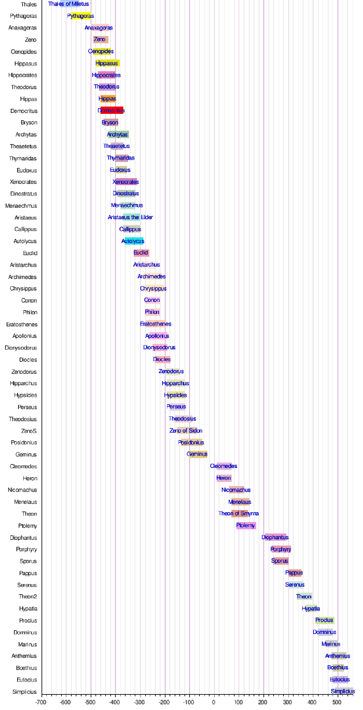
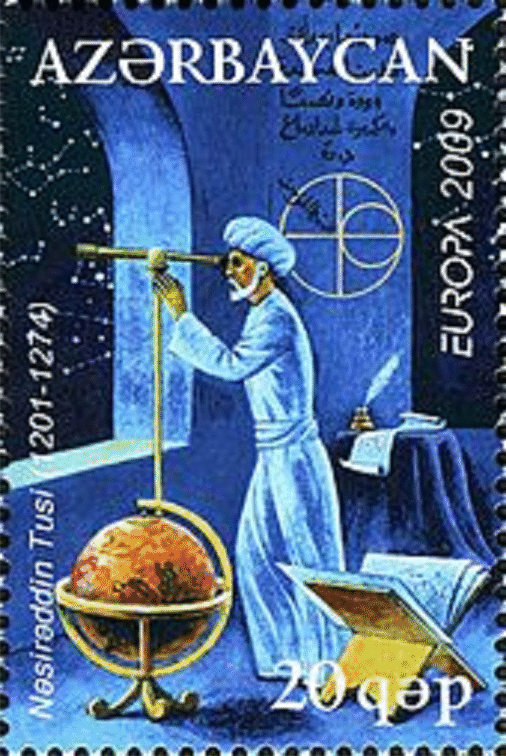
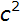

Genel Matematik
Bölüm 1 - Başlangıç Bilgileri
Batı uygarlığının başlangıcı Sümer uygarlığıdır.
1.1 - Bilginin Gelişmesine Kısa Bir Bakış
1.1.1 - Mezopotamya Kültürü
Subsubtitle
Birçok düşünür, bilginin ilk olarak antik Grek kültüründe gelişmeye başlamış olduğu düşüncesini belirtmektedir. Gerçekte antik Grek insanları, bilginin toplanmasını, toplanmış bilgilerin yeni bir bakış açısı ile yorumlanmasını, akıl yolu ile gerçeklere erişmeyi, ileri sürülen savların kanıtlanması gerektiğini, sistemli düşünmeyi, eğitimi yaygınlaştırmayı, özgür düşünceye saygı göstermeyi, dinsel düşüncelerin dünya işlerini etkilemesini olabildiğince kontrol altında tutmayı başarabilen, bu nedenlerle övgüye hak kazanan saygıdeğer insanlardır. Yine de, insanların bilgi birikimleri, antik Greklerden çok daha önceleri başlamıştır.
Buzul çağının çözülmeye başladığı yaklaşık M.Ö. 14 üncü yüzyıldan başlayarak, insanlar yaşamaya uygun bir doğal ortam bularak, yaşamlarını sürdürmeye başlamışlardır. Bu yaşayan insanlar üzerine en eski bilgilerimiz daha yeni olarak Türkmenistan yöresinde bulunan, tarihi M.Ö. 4 üncü yüzyıla ulaşan, tarım yapan, düzenli yerleşik toplulukların varlığıdır. Bu bilgiler henüz çok yeni ve yeterli bilgi sağlamaktan uzak olduğu için, üzerlerinde bilgi sağlanabilen en eski yerleşik toplulukların M.Ö. 3000 yıllarında, Mezopotamya ve Mısır da ortaya çıktığı kabul edilmektedir.
Mezopotamyada ilk görülen uygarlık Sümerlilerdir. Bu insanların kuzeyden gelerek Mezopotamyaya yerleştikleri ve yerleşimlerinin M.Ö. 5000 li yıllardan başladığı düşünülmektedir. Fakat, bilgi sağlanabilen yerleşiklik, M.Ö. 3000 li yıllarda başlamış ve Akat Kıralı Sargon tarafından M.Ö 2334 de sonlandırılmıştır. Daha sonraları tekrar güç kazanan ve Akatlarla bir sosyo-kültürel bir symbiosis yaratan Sümer-Akat uygarlığı, M.Ö. 1753 de Babil kralı Hamurabi tarafından sona erdirilmiştir. Yine de, Sümer kültürü, bir üst kültür olarak, Babil uygarlığının sona erdiği M.Ö. 538 e kadar etkisini sürdürmüştür. Babil uygarlığı, Sümer uygarlığının bir devamı sayılır.
Sümerler tarafından oluşturulmuş olan uygarlık düzeyi göz kamaştırıcıdır. Günümüzde geçerli olan birçok yöntem, kullanılmakta olan birçok gereç, ilk kez Sümerliler tarafından bulunmuş ve uygulanmıştır. Bulunan gereçler arasında, tekerlek, abaküs, astronomi hesap gereçleri, müzik aletleri bulunmaktadır. İlk yazıyı Sümerler bulmuş, ilk ideogram yazı şekilleri daha sonraları gelişkin çivi yazısı haline ulaşmıştır.
Sümerliler, bataklıkları kurutmuşlar, kanallar açmışlar, bu kanallarda teknelerle yük taşımışlar iskeleler kurarak gemi taşımacılığını ilerletmişlerdir. Tarımda uyguladıkları gelişkin yöntemler, büyük bir tahıl fazlasının oluşmasını ve nufus artışını sağlamıştır. Her türlü tahıl ve sebze üretimi yanında hayvancılık da yapmışlardır. Bira sözcüğü Sümercedir. İlk birayı onlar yapmış ve çeşitli biralar üretmişlerdir. Şehirleşmede çok ileri gitmişler, nufusun yüzde seksen dokuzunun şehirlerde yaşadığı saptanmıştır. Bu oran onların ulaştığı yüksek uygarlık düzeyini belirten bir ölçüttür. Ticaret için bakır ve gümüş parayı da ilk kullananlar Sümerlerdi. Dış ticaret inanılmaz bir yoğunluğa ulaşmış, Afganistan, Lübnan, Anadolu hatta Afrika ile bile ticaret yapılmıştır. Her türlü ticari faaliyeti devlet kontrolünde tutmuşlar, tüm çalışanları devlet güvencesine almışlardır.
İlk yasaları Sümerliler çıkarmış, yasalarda çalışanlar korunmuştur. Sümerlerde, Yasalar, mahkemeler, cazaevleri, devlet kayıt sistemi bulunmaktadır. Sümerliler, posta servisi kurmuş olan ilk uygarlıktır.
Mimarlıkta büyük ilerlemeler sağlamışlar, yük dağıtımını sağlayan kemerli yapıları ilk olarak Sümerliler yapmışlardır. Şehirleri büyük surlar içine almış ve bu şekilde, saldırılardan korunmaya çalışmışlardır.
Sümerler gelişkin savaş teknikleri kullanmışlardır. Askerleri daha çok piyade askerleriydi, fakat bunların yanında, süvari ve okçu birlikleri de bulunmaktaydı. Askerlerin savaş formasyonları, ileri düzey eğitimli olduklarını, büyük bir olasılıkla profesyonel askerler olduklarını belirtmektedir. Savaş arabalarını ilk olarak Sümerler kullanmış, aynı zamanda askeri gereçleri de ağır arabalarla taşımışlardır.
Sümerler gelişkin bir ölçüm sistemi uygulamışlar ve bu ölçüm sistemi, onları matematikte ilerlemelerini sağlamıştır. Uzunluk, yüzey ve hacım ölçülerini ilk uygulayanlar Sümerler olmuştur. Yaklaşık M.Ö. 2600 yılardan başlayarak aritmetik ve geometri’ yi ilk uygulayanlar Sümerlerdir. Dört işlemi bulmuşlar, çarpım cetvellerini oluşturmuşlar, bölmeleri denklemleri çözmeye çalışmışlar, üçgen ve kübün hacımlarını hesaplamışlardır. Sümerliler, hem 10 lu (desimal) hem de 60 lı (hexagesimal) bir sistemde hesap yapıyorlardı. Matematikte amaçları, arazi ölçümleri, takvim bilgileri gibi gündelik yaşam gereksinmeleriydi. Yılın 365 gün olduğu, saatin 60 dakika olduğunu, dairenin 360 parçaya bölündüğü gibi bilgileri ilk olarak Sümerliler bulmuştur. Sümerliler ilk olarak abakus kullanarak hesap yapmayı bulmuşlar ve astronomik hesaplarda bir tür hesap cetveli kullanmışlardır. Babil sayı sistemi denilen, sayıların yazılış yerlerine göre değerlendirildiği yöntemi de ilk uygulayan Sümerlerdir.
Astronomide gözlemler yapmaya ilk olarak Sümerliler başlamışlardır. Sümer zigguratlarının alt katları din işlerine, orta katları eğitime en üst katları astronomik gözlemlere ayrılmaktaydı. Ay ve güneş tutulmalarını hesaplamışlar ve günümüzde geniş bir ilgi odağı olan burçları da Sümerliler oluşturmuştur.
Babil uygarlığında Sümer matematik kültürü daha da gelişmiştir. Babillierin en büyük buluşu, sayıları içerlek yazarak onlu basamakları kullanabilmeleri ve bu şekilde birçok astronomik hesabı gerçekleştirebilmeleridir. Babil uygarlığının en etkili olduğu M.Ö. 600 yıllarda, Nabukadnezar II zamanında, Kudüs’ün ele geçirilişi sonunda İbranilerin Babile getirilişi, Sümer kültürünün daha batıya doğru yayılmasına ve Grek ve Roma kültürlerini etkilemesine neden olmuştur. Aynı tarihlerde, Babil tanrısı Marduk adına yaptırılan ve adına Babil kulesi denilien ziggurath’ı da Sümerli mimarlar yapmışlardır.
Sümer kültürünün etkili olduğu Mezopotamya uygarlığı, Perslerin Babili, M.Ö 538 de ele geçirmesi ile sona ermiştir. Fakat, Babil astronomi kayıtları Hindistana geçmiş ve burada geliştirilerek uygarlığımızın en büyük kaynağı olan 10 sayı sistemi ve sıfır sayısı bu çalışmalardan yararlanılarak oluşturulmuştur.
Mezopotamya kültürünün ne kadar yoğun bir bilgi birikimi sağlamış olduğu, açıkça görülmektedir. Aynı şekilde, antik Mısır uygarlığı da benzer bilgileri oluşturmuştur. Bu uygarlığın da oluşturduğu bilgiler de, aynı Mezopotamya kültürü gibi, antik Grekler tarafından özümsenmiş, yeni düşüncelerle ve yeni yöntemlerle zeginleştirilerek batı uygarlığının temelini oluşturmuştur.
1.2 - Mısır Uygarlığı
Mısır yerleşik topluluğu, çok daha önceleri oluşmaya başlamasına karşın, ilk kayıtlı bilgiler ancak M.Ö. 3000 li yıllardan ilerisini açıklamaktadır. Mısır uygarlığı Yukarı Nil etrafında oluşmuş, büyük bir uygarlık olarak uzun asırlar, birleşik ve yerleşik olararak varlığını sürdürmüştür. Mısır uygarlığı üzerinde ilk bilgilerin sağlandığı tarihten başlayarak varlığını sürdüren bu uygarlığın sona erdiği tarihi belirlemek çok kolay değildir. Mısır uygarlığı politik olarak çok kez, artık bitti denildiği andan sonra bile varlığını sürdürdürmüş, politik değişimlerden sanki hiç etkilenmemiştir. Mısır uygarlığının gerçek sonu, Roma imparatorluğunun Hristiyanlığı kabul edişi ve Doğu ve Batı Roma İmparatorluğu olarak ikiye ayrıldığı, Mısır tapınaklarının kapatıldığı M.S.391 yılı olmuştur. Mısır uygarlığında, rahipler, yazmanlar, halk şeklinde katmanlı bir toplum yapısı oluşmuştur. Bilgiler sadece rahipler ve yazmanlar arasında paylaşılmış, halk tabakasına fazla yansımamıştır. Bilgiler, kolay bozulabilen papirüs (papuros - grk.-papirüs - lat.-papier - fr - paper - ing.) yapraklarına yazılarak saklandığından, günümüze ulaşan bilgiler daha çok taşlara yazılmış olanlardan kaynaklanmaktadır. Bu uygarlıkta, 10 lu sayı sistemi kullanılmış, Mezopotamya uygarlığında bulunanlara yakın matematik bilgiler elde edilmiştir. Mısır uygarlığı, çok parlak, etkili ve etkileyen bir uygarlıktır. Mısır halkı durağan, firavunlarına ve dinsel inanışlarına bağlı, çalışkan bir toplumdur. Sanıldığının aksine, askeri nitelikleri fazla olmayan, ziraat ve zenaat insanlarıdır. Bu insanların uyumlu karakterleri, Mısır da büyük yapıların, heykellerin, tapınakların, piramitlerin yapılabilmesinde, şehirler kurulabilmesinde en büyük etken olmuştur. Bu yazının kısıtlı içeriğinde, Mısır uygarlığı gibi, çok uzun süre varlığını sürdürmüş, her alanda gelişkin bir yapısı olan, çok yoğun bilgilere sahip olan bir uygarlığın tanıtımı, yeterli olmayacaktır. Burada, sadece Mısır matematik bilgisi üzerine elimizdeki bilgileri inceleyebileceğiz.
Mısır uygarlığında matematik, pratik maçlar için uygulanan bir zenaat olarak kabul edilmiştir. Nil nehrinin taşması sonrasında kaybolan tarla sınırlarının yeniden hesaplanması, ürünlerin kaydı ve hesaplanması gibi konularda kullanılan matematik bilgisi oldukça geniş ve daha çok aritmetik ağırlıklıdır. Geometri fazla gelişmemiştir. Daha da ilginç olan yönü, bu bilgilerin asırlar boyunca aynı kalması, daha fazla ilerletilememiş olmasıdır. Yine de geniş bir matematik bilgisi elde edilmiştir. Mısırlılar, dört işlemi, kesirli sayıları, dairenin ve diğer basit geometrik şekillerin alanlarını bulmayı, π sayısının yaklaşık 3.16 olduğunu, faiz hesaplarını biliyorlardı. Bu bilgiler ne yazık ki, fazla meraklı olmayan ve sıradışı olmaktan çekinen bu halk tarafından, asırlar boyu geliştirilmeden kalmıştır.
Mısır sayı sistemi, on temeline göredir. Mısır rakkamları Roma ve Grek rakkamları gibi yazı karakterindedir ve aritmetik işlemlere uygun değildir. Bu yüzden eski Mısırda matematik fazla ivme kazanamamış olabilir. Yine de kendisinden sonra gelen Grek uygarlığına önemli ölçüde bir bilgi kaynağı aktarmıştır. Gerek Mezopotamya, gerekse Mısır uygarlıklarında, antik Grek uygarlığının ulaşabileceği, azımsanamayacak bir bilgi birikimi sağlanmış olduğu yadsınamaz. Uygarlık ne antik Greklerle başlamış, ne de onlarla birlikte sona ermiştir. Antik Greklerin tarihteki muhteşem rolleri, bu bilgileri toplamaları, yeniden yorumlamaları, düşünsel olarak irdeleyip, matematik ve filosofi sistematiğini, dolayısı ile dünyanın bilim çatısını oluşturmuş olmalarıdır.
1.3 - Antik Grek Uygarlığı
Antik Grek uygarlığı ilk olarak Girit adasında Minos uygarlığı ile M.Ö. 2700 yıllarında ortaya çıkmıştır. Bu tarih, Sümer uygarlığının saptanabilen yerleşiminden üçyüz yıl kadar sonradır. Bunun anlamı, Minos uygarlığı henüz yeni oluşurken en az üç yüz yıldan beri Sümer uygarlığının yerleşik ve düzenli bir toplum oluşturmuş olması ve büyük çapta bilgi birikimi sağlamış olmasıdır. Minos uygarlığı bir Etrüsk - Girit uygarlığı karakterindedir. Bu insanlar, Lineer A olarak adlandırılan ve henüz tam olarak çözülemeyen bir alfabe kullanmışlar, başta kereste olmak üzere birçok ürünü deniz aşırı pazarlamışlar, büyük saraylar, görkemli yapılar yapmışlardır.
Anayurt Grek yarımadası, M.Ö. 2100 yılarında bir Hint - Avrupa ulusu olan Grek kökenli Mikonos (Akha) ların istilasına uğramıştır. Minos uygarlığı M.Ö. 1400 yıllarında, Grek yarımadasından gelen Miken (Mikonos) (Akha) lar tarafından sona erdirilmiştir. Mikonoslar M.Ö. 1400 lü yıllarda tüm Girit adasının kontrolünü ele geçirmişler, Minos uygarlığına son vermişler, fakat kültürlerinden yararlanmışlardır. Bu etkileşim sonucu, Mikonos kültürü, Lineer B olarak adlandırılan bir alfabe geliştirmiştir. Mikonoslar da güçlü bir uygarlık kurmuşlar, çevre adalarla ticaret yapmışlardır. Mikonoslar diğer deniz kavimleri ile birlikte M.Ö. 1190 yılında Mısır' a saldırmış, fakat geri püskürtülmüşlerdir. M.Ö. 1184 yılında Truva' ya saldırarak şehri yıkmışlardır. Çeşitli kaynaklar bu tarihi M.Ö. 13 ve M.Ö. 12 inci yüzyıllar arasında tarihler vermektedirler. Truva savaşı, Grek etnisite ve kültürünün oluştuğu dramatik bir olay olarak, dünyanın en büyük edebiyatçısı olarak kabul edilen Izmirli Homeros (Yaşadığı tarih kesin olarak bilinmemekte fakat genel olarak M.Ö. 9 uncu yüzyılda yaşadığı düşünülmektedir) tarafından yazılan İlyada (Heliada) ve Odissei adlı eserlerin konusunu oluşturmuştur. Bu epik eserler Helen kültürünün başlangıç eserleridir ve günümüzde dahi güncelliklerini korumakta, büyük bir okuyucu sayısına erişmektedirler. Homeros’un Grek kültürünün başlatıcısı olduğunu bizzat Platon, “Devlet” adlı eserinde kendisinden “Protos Didaktos” (İlk Öğretmen) olarak bahsederek belirtmiştir. Bu devirde, ticaret ve diğer ilişkiler, Mezopotamya ve Mısır kültürünün Grekler arasında tanınmasına yol açmıştır. Bu devirde kolonizasyon da başlamış, Grekler Karadeniz, Ege ve Akdeniz kıyılarında küçük yerleşim yerleri kurmaya başlamışlardır. Mikonos uygarlığı, M.Ö. 1100 yıllarına kadar sürmüş, fakat bu tarihten sonra gücünü kaybetmeye başlamış, bu da Grek yarımadasında "Karanlık Çağ" adı verilen bir durağanlık ve başıboşluk döneminin başlamasına neden olmuştur.
Grek yarımadasına M.Ö. 1100 yıllarından kuzeyden Dor ve doğudan İyon ve Eoller göç etmişlerdir. Dorlar Isparta, İyon ve Eoller de Atina şehirlerini kurmuşlardır. Bu devirde kolonizasyon daha da hızlanmıştır. Bu süreçte, Grek uygarlığı düzey kaybetmiş, devlet kurumları zayıflamış ve Lineer B yazısını bilenler azalmıştır. Bu karanlık çağ, ilk Olimpiyat oyununun düzenlendiği M.Ö. 776 de sona ermiştir.
Karanlık çağın M.Ö. 8 inci yüzyılda sona ermesi ile, Grek Antik Çağı başlamıştır. Bu süreç, bir Grek yeniden doğuşu dönemidir. Unutulan eski Mikonos Lineer B alfabesi yerine, Fenike alfabesine dayalı yeni ve çok daha kullanışlı bir Grek alfabesi geliştirilmiştir. Fenike alfabesi, "ebcet" olarak adlandırılan, batı semitik alfabe sistemine dayanır. Arap alfabesi de bu alfabe sistemindedir. Bu alfabe sadece sessiz harflerden oluşmaktadır. Doğal olarak, sadece sessiz harflerden oluşan bir alfabe ile sözcüklerin yazılması ve okunması kolay değildir. Arap alfabesi kökenli eski Osmanlı alfabesinin de sorunu budur. Modern Grek alfabesi, Fenike alfabesine sesli harflerin eklenmesi ile oluşturulmuş ve bu şekilde dünyanın ilk sesli ve sessiz harflerini içeren alfabesi niteliğini kazanmıştır. Günümüzde de kullanılmakta olan bu alfabenin tutarlı yazım ve okunuşu, öğrenme kolaylığı, Grek kültüründe okuryazarlığı arttırmış, felsefe, edebiyat, tarih gibi bilimlerin gelişmesine başlıca etken olmuştur. Modern Grek alfabesi, Kiril alfabesine, Latin alfabesine kaynaklık etmiştir. Bu şekilde, modern Grek alfabesi, modern Türk alfabesinin de kaynağı sayılır.
Grek antik çağı, kolonizasyon dönemi sona erdikten sonra başlamıştır. Artık Grek kolonileri yerleşik ve düzenli kentler olmuş, hem anayurt Grek ülkesi hem de çevrelerindeki kültürlerle ilişkileri güçlenmiş, bu şekilde yerel kültür bilgilerinin, anayurda aktarılması ile Grekler arasında bir doğudan etkileşim süreci başlamıştır. Grek antik çağı, İsadan önce altıncı yüzyılda, M.Ö. 508 de Atina kentinin tiranların idaresinden kurtularak tekrar demokrasiye kavuşmaları ile son bulmuştur.
Grek antik çağından sonra, sonra "Klasik" antik Grek devri başlamıştır. Artık yerleşik bir uygarlık, deneyimli devlet idareleri, kolay okunup yazılabilen bir alfabe, doğuda Babil ve Mısırda değerlendirilmeyi bekleyen önemli bilgiler vardır. Bu dönemde, antik Grek bilgeliğinin başladığını görüyoruz. İzmirli Homeros’u yine Anadolu' dan Miletli (Gökova) Thales ve bunu Samos adasından matematikçi Pitagoras ve sayısız diğer büyük düşünürler izleyecektir. Fakat ülke tam rahat bir nefes alacak iken, bu sefer Pers istilasının karabulutları görülecektir. M.Ö. 449 da Pers Kralı Büyük Darius, Grek ülkesini istila etmek için harekete geçmiştir. Pers istilasını durdurmak antik Grekler için çok acılara neden olacaktır. Darius' un girişimi, Atina donanmasının Maraton' da kazandığı başarı ile sonuçsuz kalacaktır. Yine de daha üstün bir düşmana karşı güçlükle kazanılan bir başarı olmuştur. On yıl kadar sonra Darius' un oğlu Kserkses yeniden istila girişiminde bulunmuştur. Isparta kralı Leonidas' ın Termopillerde 300 askeri ile üstün kuvvetler karşısında, kendini feda ederek ile önlerini kesmesi ve Atina donanmasının Atinalı amiral Themistokles komutasında Salamis körfezinde üstünlük sağlaması ile, ikinci istila girişimi de önlenmiştir. Bundan bir yıl sonra Plataea kara ve Mikale deniz zaferi ile Pers kuvvetleri kesin bir yenilgiye uğratılmıştır. Salamis zaferi, antik Greklerin uygarlık yolunda ilerlemeleri ve Batı uygarlığının temellerinin atılmasının sağlanması açısından bir kader savaşı olarak nitelendirilmektedir. Büyük Atatürk sayesinde, bizler de bu ışıktan yararlananlar arasına katılmış bulunuyoruz. Perslerin çekilmesinden sonra, Makedonya kralı Filip II karşı atağı başlatmış, fakat bir saray darbesi sonunda öldürülünce, M.Ö. 336 da oğlu İskender III (Büyük İskender) (Alexandros o Megas) tahta geçmiştir. Büyük İskender 330 yılında Mısır' girmiş ve Aleksandria (İskenderiye) liman şehrini kurmuştur. Bu şehir, antik Greklerin, Mısır uygarlığının bilgilerini incelemeleri için bir köprü görevini yapacaktır. Aslında İskenderiye tam bir Grek koloni kentidir. Büyük Iskender, Mısırdan sonra Darius II yi yenmiş ve Babil'i almıştır. Darius II’ nin ölümü ile kendini Pers İmparatoru ilan etmiş, M.Ö. 330 da Babilde hastalanarak (gıda zehirlenmesinden olduğu sanılıyor) yaşamını kaybetmiştir.
İskenderin ölümü ile antik Grek tarihinde Helenistik devir başlamıştır. Bu devir, kültür ve bilgi birikiminin altın çağıdır. Helenistik devir M.Ö. 146 da Romalıların Grek ülkesini istila etmeleri ile politik olarak son bulacak, fakat antik Grek uygarlığı Roma idaresinde de aynen devam edecektir. Romalılar, Grek ülkesini işgal etmişler fakat Greklerin kültürel hegemonyasına girmişlerdir. Hristiyanlığın etkisinin artması, Roma İmpratorluğunün Hristiyanlığı kabul edip Doğu ve Batı Roma olarak 391 de ikiye ayrılması, Doğu Roma olarak tanınan Bizansta, düşünce özgürlüğünü kabul etmeyen Hristiyanlığın baskısının artması ile antik Grek kültürünün zor günleri başlamıştır. M.S.514 de, Birinci Konstantinus' un (Justinianus I), Atina Platon Akademisini Hristiyan öğretisinin gelişmesine engel oluşturduğu gerekçesi ile kapatması ile antik Grek kültürü anayurtta sona erecek, fakat Bizans ve diğer Hristiyan doğu kavimlerinde, özellikle Süryanî ve Nasturî toplumlarında devam edecektir. 1453 de Türklerin Bizansı alarak Bizans (Doğu Roma) imparatorluğunu sona erdirmeleri ile, antik Grek kültürü Avrupa' ya yayılarak Rönesans ve Reform hareketlerinin ateşleyicisi olacaktır. Aşağıda, çok tanınan Grek matematikçilerin yaşadıkları tarihler görülmektedir (http://en.wikipedia.org/wiki/Timeline_of _Ancient _Greek _mathematicians).

Büyük Grek Matematikçilerin Kronolojisi
Burada listelenen matematikçilerden sadece bazılarını bu çalışma çerçevesinde inceleyebileceğiz. İlk incelenenek olan matematikçi, hemşehrimiz olmasından büyük gurur duyduğumuz, Gökova da bugün su altında kalmış bir antik kent olan, Miletus' lu Thales olacaktır.
Thales
Thales M.Ö. VII inci ve VI ıncı yüzyıllarda, tahminen M.Ö. 624-546 yılları arasında, Batı Anadolu’da Bodrum civarında Miletus da yaşamıştır. Thales, dünyada oluşan doğal olayların mitolojiye dayanmadan açıklanması gerektiğini belirten ilk düşünür olmuştur. Thales, tanrıların dünya işlerine karışmadığını, doğal olayların nedenlerinin kendi içlerinde aranması gerektiğini belirtmiştir. Thales basit prensiplerden akıl yürütme (dedüksiyon) ile sonuçlar çıkarılmasını ve çıkarılmış olan sonuçların mutlaka akla uygun bir şekilde kanıtlanması gereğini belirtmiştir. Bu yüzden Thales, Matematik ve Felsefeyi ilk başlatan insan olarak tarihe geçmiştir. Thales doğa olaylarının gözlem yolu izlenmesi ve sınıflandırılmasını sağlık verdiği için, aynı zamanda “Bilimin Babası” olarak da kabul edilir. Thales’in kendi kuramı olan “Thales Teoremi” hem kendisi, hem de kendisinden üç yüzyıl sonra Euclides tarafından kanıtlanmıştır.
Thales, öğrenimini Mısırda yapmış, bir Mısırlı rahip tarafından yetiştirilmiştir. Babil’e de gitmiş olduğu söylenmektedir. Geometri bilimini, trigonometrik bilgilerini Mısırdan almıştır. Astronomi bilgilerini Babil’den almış olması olasıdır.
Mısır ve Mezopototamyadan kaynaklanan bilgiler, matematiğin güncel kullanımı üzerinedir. Thales bu bilgileri ilk olarak düşünsel düzeye yükselten kişidir. Bu yüzden, antik Grek matematiği, eski çağ matematiğinden ayrılır. Thales ile birlikte Matematik bir filosofi düzeyine yükselmiştir.
Thales, antik Grekte “Yedi Akıllı Adam” lardan biridir. Bir başka
akıllı adam olan Solon ile yakın dosttur.
Pers istilası sırasında Lidya kralı Krezüs’e danışmanlık yapmış,
savaşta sırasında güneş tutulmasını tahmin etmiş, bundan yararlanarak
bir barış yapılmasını sağlamıştır.
Thales, dünyanın temeli olarak suyu kabul etmiştir. Kendisinden sonra gelenler buna ateş , toprak ve havayı da ekleyerek “Yaşamın Dört Elementi” olduğunun kabul etmişlerdir. Aristoteles buna beşinci element olan “Aether” (Uzay)’yı da ekleyerek element sayısını beş’e çıkarmıştır. Bunlar sadece filosofik düşüncelerdir. Günümüzdeki periyodik cetvelde belirtilen elementlerle karıştırılmaması gerekir.
Thales, kendini ziyarete gelen genç Pythagoras’a öğrenim için Mısıra gitmesini öğütlemiş. Pythagoras bu öğüde uyarak Mısıra gitmiş, eğitimi sırasında, Perslerin Mısırı işgali ile Babil’e gönderilmiş ve orada müzik, matematik, astronomi konularında eğitim almıştır.
Thales, M.Ö. (548-545) yılları arasında yapılmış olan, 58 inci Olimpiyat oyunlarını izlerken, kalp krizinden ölmüştür.
Bu bilgilerden anlaşılabileceği gibi, tüm dünyanın kabul ettiği gibi, bizim de içinde olduğumuz “Batı Uygarlığı”, ülkedaşımız, Anadolu’lu Thales tarafından başlatılmıştır. Bugün Kanada (Québec bölgesinde) Thales adına kurulmuş uluslarası bir matematik araştırma enstitüsü bulunmaktadır. Bizler de kendisi ile gurur duymalı ve Milet yakınlarında, Thales adını taşıyan uluslararası bir üniversite ve araştırma enstitüsü kurmalıyız.
Burada kronolojiye bir ara vererek, olayları inceleyelim. Olayları iyi incelememiş olanların ileri sürdükleri gibi, herşey Antik Greklerle başlamış değildir. Grekler, büyük bir bilgi birikimini, yeni bakış açıları ile yorumlayıp genişlettikleri için her türlü övgüye hak kazanmış olan büyük bir ulustur. Bunu da ilk başlatan Anadolulu Thales’dir.
Pythagoras
Pythagoras, Samos adasında (Kuşadasının karşısında) doğmuş, M.Ö.
(570 - 495) yılları arasında yaşamıştır. Gençlğinde Thalesin, sağlık
vermesi ile Mısıra gitmiş, Orada öğrenim görmüş, Persler' in Mısır'
ı işgal etmeleri üzerine, Babil'e gönderilip orada da matematik,
müzik bilgisi, astronomi öğrenmiştir. Tekrar Samos' a dönen Pythagoras,
40 yaşlarında İtalya nın Grek yarımadasına bakan güneydoğu kısmında,
bir Helenistik yerleşim olan "Magna Graecia" (Megali Helias) (Büyük
Yunanistan)' a göç etmiş ve orada ölmüştür. Pythagoras, kendisinden
sonra gelen biçok filosofu etkilmiştir. Matematik sözcüğü de kendi
grubundan kaynaklanmaktadır. Tarikatının önde gelenlerine “Mathematikoi”
(Matematikçiler) adı verilmekteydi. Pitagoras, kendi adı ile tanınan
kuramı bulmuş ve birlikte yaşadıkları tarikat arkadaşları da çok
sayıda matematik kuram ortaya koymuşlardır. Pitagoras müzik ile
matematiği bağdaştıran ilk düşünürdür. Pythagoras, büyük bir olasılıkla
Babil matematik geleneğinden etkilenerek, sayılara ve harmonilerine
önem vermiştir. Henüz sadece basit oranların bilindiği devirde,
Pitagoras teoreminin uygulanması sonucunda irrasyonel sayılar ortaya
çıktığında, Matematikoi tarikatının üyeleri çok zorlanmışlardır.
Matematiğin ilk çelişkisi sayılan bu bulgunun aslında doğal olduğu
daha sonraları anlaşılacaktır. Pythagoras' ın tarihte en çok esinlenilmiş
isim olduğu ileri sürülmektedir. Özellikle Platon' u, Euclides'
i ve diğer antik Grek filosoflarınını etkilemiş, tarikatının gizli
kuruluş sistemi, mason localarınca ve başka kamuya açık olmayan
kuruluşlarca örnek alınmıştır.
.
Heraklitus
Efes te M.Ö. (535 - 475) arası yaşamış olan Heraklitus, sürekli değişime dikkat çekmiş, ve "Logos" (sözcük, ifade şekli) adını verdiği ve evrenin ilişkilerini oluşturan bir etken olduğu düşüncesini geliştirmiştir. Lojik sözcüğü ondan kaynaklanmaktadır. Heraklitus' un en önemli tümcesi, "Bir nehirde, iki kez yıkanılmaz" olarak açıkladığı, evrenin sürekli değişimine işaret ettiği düşünce olmuştur.
Parmenides
M.Ö. 6 ve 5 inci yüzyıllar arasında Elaides (Magna Graecia) da yaşamış olan Parmenides büyük bir şair ve filosoftur. Latince Magna Graecia (okunuşu. magna greçya) olarak adlandırılan bölge, Napoli (nea Polis) ‘e kadar Tüm güney İtalya ve Sicilyayı içeren Helenistik bir yerleşimdir. Elaides (Helaides), Pers istilasından kaçan Foça (Phokea) lılar tarafından, Foça ile aynı enlemde Tirenyen denizi kenarında oluşturulmuş, bugünkü adı Velia olan bir helenistik yerleşimdir. Parmenides "Doğa Üstüne" adındaki uzun şiirinde, sadece görüntülerin değiştiğini, evrenin değişmez bir oluşumdan kaynaklandığını, insanın da bu oluşumun bir parçası olduğunu belirtmiştir. Kendisi "Olmak bir şey, olmamak hiçbir şey" diyerek olmayı öne çıkarmıştır. Bu sözcükler, René Descartes (Renatus Carthagianus)' ın çok ünlü, "Cogito Ergo Sum" sözlerini anımsatmaktadır. Aynı zamanda Shakespeare’in “Hamlet” tragedyasında ünlü “Olmak veya olmamak, işte sorun bu !” tümcesi de Parmenides’i anımsatmaktadır. Parmenides, Elaides düşünce sitemini oluşturmuş ve çok ünlü bir filosof ve matematikçi Elaides' li Zeno' yu (Ksenon) yetiştirmiştir.
Zeno
Elaidesli Zeno (Zenon, Ksenon) olarak da tanınan Zeno, M.Ö. 500 yıllarında Elaides (Magna Graecia) (Megali Helias) da yaşamıştır. En önemli çalışması, "Aşil ve Kaplumbağa" çelişkisi (paradoks) udur. Aşil, kaplumbağaya bir avans verir ve yarışırlar. Aralarındaki aralık çok kısalmasına karşın Aşil, kaplumbağayı asla yakalayamaz. Bu çelişki matematikçileri çok düşündürmüştür. Çözümü bugün bile tartışmasız olarak bulunabilmiş değildir. Çözüm için limit, sıfır ve sonsuz tanımları üzerinde anlaşılması gerekli olmaktadır. Bu çelişki üzerine d' Alembért, Bolzano ve Weirstrass çalışmışlardır. Aristoles’in belirttiğine göre, Elaides' li Zeno, ileride Sokrates tarafından geliştirilecek, diyalektik düşünce yöntemini ilk olarak ortaya atan filosof olmuştur.
Empedokles
M.Ö. (480 - 420) arasında yaşamış olan Empedokles, Thales' in yaşam kaynağı olarak gösterdiği suya hava, toprak ve ateşi de ekleyerek, evrenin oluşumunun dört elementten kaynaklandığını ileri sürmüştür. Bu dört element (Philotes = Dostluk) ve Neikos (Kavga) arasındaki ilişkiye göre şekillenir. Philotes birleştirici, Neikos ayrıştırıcı bir etki gösterir. Total birleşim Parmenidesin birleşik, total ayrışma ise Heraklitusun ayrık dünyalarına denk gelir. Empedokles' e göre her iki etken de evren için gereklidir. Empedokles' in ileri sürdüğü "İyi" ve "Kötü" karşıtlığı, Newtoncu fiziğin temelini oluşturur. Bunun ilk pratiğe yansıması, Archimedes' in "Kaldırma Kuvveti" prensibi ile başlar. Bu düşüncenin Çin inanışı "Yang" ve "Yin" ler ile de benzeştiği düşünülebilir.
Demokritos
M.Ö. (460 - 370) lerde, Abdera' da yaşamıştır. Demokritos çağına göre inanılmaz sayılan atom kuramını ilk düşünen kişidir. Atom (a - tomesis) (kesilemeyen) sözcüğünden kaynaklanmaktadır. Demokritosa göre, evren yaşam ve yaşam karşıtlığı (boşluk) arasındaki denge ile şekillenmektedir. Atomlar, kesilemez, kaybolamaz, birbirlerinin aynı parçacıklardır ve sürekli hareket halindedirler. İnsan ve eşyaların yapısı, atomlar ve boşluk arasındaki dengeden kaynaklanmaktadır. Bu kuram, Parmenidesin durağan, Heraklitus' un sürekli hareket halindeki evreni arasında bir sentez sayılır. Atom kuramı ile ilgili çalışmalar, yüzyıl sonra Epikür ile devam edecektir. Demokritos, Sokrates ile aynı zamanda yaşamıştır. Sokrates ile Atina' da görüşmüş olabileceği düşünülmektedir. İnsanın kendi içinde "İyi" ve "Kötü" yü taşıdığı, ve kötü bir şey yapılınca herşeyden önce kendi içinde utanç yaşandığını belirtmiştir. Bu düşünceleri Sokrates ile aynı yöndedir.
Protogoras
Protogoras, M.Ö. V inci yüzyıl da (480 - 402) Trakya' dan gelerek Atina' da yaşamış ve Atina' yı batı uygarlığının merkezi haline getirmiş etkili bir düşünürdür. Düşünceleri, “Sofizm” adı verilen bir düşünce ekolü oluşturmuştur. Sofistlere göre, evrenin tanınması insanların tanıma yetenekleri ile sınırlıdır ve tanıdıklarının yargılama olanaklarının farklılığı genek tanımları olanaksız hale getirir. Her olayın merkezinde insan vardır."Sofos" ergin, akıllı, bilgili insan anlamında kullanılan bir sözcüktür. Sofizm bilgelik yoludur. Bir tür Budizmin "Nirvana" sıdır. Sofizm, düşüncede rölativizm getirir. Bu düşünceler ileride hümanizm ve şüpheciliği doğuracaktır. Sofistler, Atina'da iyi yetişmek isteyen gençler için pahalı eğitim kurumları kurmuşlar, bu ilkesizlikleri, "filosofi" lerini tartışılır hale getirmiştir. Bu konuda, Sokrates ve Platon sofistleri eleştirmişlerdir. İleri düzey yöntemlere "Sofistike" (Bilgece) denilmesi sofistlere vurgu yapılmak istenmesinden kaynaklanmaktadır.
Sokrates
M.Ö. (469 - 399) arası yaşamış olan Sokrates doğuştan Atinalıdır ve hiç tartışmasız filosofinin en tanınmış ve seçkin isimlerinden biridir. Kendisi hakkında bilgiler, öğrencisi ve takipçisi Platon dan kaynaklanmaktadır. Sokrates, babası gibi bir taş işçisidir ve Partenon tapınağının kabartmalarında emeği olduğu söylenir. Aynı zamanda bir asker ve siyasetçidir. Sokrates, diyalektik yöntemini geliştirmiş ve doğanın ilişkilerini saptamak için diyalektiği uygulamıştır. Yöntemleri, günümüz sol düşünüşünün, diyalektik meteryalizm yöntemi üzerine etkili olmuştur. Platonu yetiştirmiş ve hayranlığını kazanmıştır. Bir tümcesini tüm eğitimciler kural olarak benimsemelidir. Sokrates, "Öğrencilerine saygı göstemeyen bir öğretmen, hiçbir şey öğretemez" demiştir. Bilgisini maddi varlık edinme aracı olarak kullanmamış, daima haklı ve ezilenlerden yana olmuştur. Sokrates' in düşünceleri, Atinanın hakim sınıfları üzerinde rahatsızlık yaratmış, pazar yerindeki konferanslarında, bilgeliğe önem vermesi ve zenginliği önsemez söylemleri, bilgeliğini değerlendiremeyen, dar görüşü karısının ulu-orta gereksiz konuşmaları, kendisi üzerindeki hoşnutsuzluğu arttırmış ve bir gün tanrılara saygızlık yaptığı gerekçesi ile tutuklanmıştır. Söylentilere göre yaşamını bitirmek amacı ile, Sokrates bilerek zayıf bir savunma yapmış, bu yüzden de dünyanın en dramatik ve adaletsiz kararı olarak kabul edilen Sokratesin idam kararı verilmiş, baldıran zehiri ile yaşamına son verilmiştir. Son sözleri, öğrencisi Kriton' a "Asklepiyona bir horoz borcumuz var, unutma borcumuzu öde" olmuştur. Tanrılara saygısızlıkla suçlanan bir bilge kişinin, tanrılara saygısı, yüzyıllar boyu takdire değer bulunmakta ve Sokrates her zaman saygı ile anılmaktadır.
Platon
Platon M.Ö. (428 - 348) yılları arasında Atina' da yaşamış, batı uygarlığının temel taşı olan bir filosoftur. Etik, lojik, din ve matematik konularında, geniş bir alanda çalışmalar yapmış, kitaplar yazmış ve dünyaya büyük ve değerli bilgiler bırakmıştır. Platon, görünen cisimlerin soyut ve ancak akılla bulunabilecek "İdea" lardan oluştuğunu, ideaların olayların oluşumunu ve anlamını sağladığı, en üst düzey idea' nın "İyilik" olduğunu belirtmiştir. Bunun tanrısal bir düşünüş olduğu ileri sürülmektedir. Platon' u etkilemiş olan isimlerden birisinin Sokrates, diğerinin de Pythagoras olduğu belirtilmektedir. Sokrates gibi, diyalektik yöntemini kullanmış ve bu şekilde insanlarının bilincini açarak iyiyi bulmasına olanak sağlamaya çalışmıştır. Pythagoras' tan ise düzen fikrini almıştır. Platonun önemli yönlerinden birisi Atina akademisini kurmasıdır. Platon' un akademisi, Atina dışında geniş bir arazide kurulmuştur. Akademi ismi değişik kaynaklara göre, bir savaş kahramanı veya arazinin eski sahibinin ismidir. Akademi ismi bundan sonra, yüksek öğretim kurumlarına verilen isim olmuştur. Akademinin ilk mezunları arasında Aristoteles de bulunmaktaydı. Akademi, uzun yıllar çok iyi hizmet vermiş ve çok değerli insanlar yetiştirmiştir. Akademi M.S.529 yılında Bizans İmparatoru I inci Konstantin (Justinianus I) tarafından, Hristiyanlığın gelişmesine engel olduğu gerekçesi ile kapatılmıştır. Bu tarih antik Grek kültürünün anayurtta sona erdiği tarihtir.
Euxodus
Batı Anadoluda Knidus kentinte doğan, (M.Ö. 408 - 355) yılları arasında yaşayan Euxodus, Atina Akademisinin ilk mezunlarındandır. Kendi adı ile anılan "Exhaustion" metodu ile bilinmeyen bir yüzeyin alanını, alanı bilinen geometrik figürlerle doldurmuş ve bunları gitgide küçülterek, yüzeyin çok yaklaşık bir alanını hesaplama olanağını ortaya çıkarmıştır. Bu yöntem ileride, Sabit bin Kurra tarafından geliştirilecek ve günümüzdeki belirli integral hesaplama yöntemini oluşturacaktır. Euxodus, orantılarla ilgili çalışmalar da yapmıştır. Günümüzde araçların “Exhaust” (Eksoz) sistemlerinin adı, “Exhaustion” metodu anısına konulmuştur.
Euclides
Euclides' in yaşamı hakkında fazla bir bilgi yoktur. Genel olarak kabul edilen bir görüş kendisinin Platon' un Akademisinden Euxodus ile birlikte mezun olduğu ve Ptolemeus Soter zamanında (yaklaşık M.Ö. 300) Mısır, Alexandria' ya yerleşerek "Museion" (Muze' lerin yurdu) (latince "Museum") adlı bir matematik okulu kurmuş olduğudur. Museum, Tanrı Zeus' un güzel müzik çalarak insanlara sevgi ve esin veren melekleri "Muses" adına kurulmuştur. Bugünkü Müze sözcüğü de oradan kaynaklanmaktadır. Euclides, "Elements" (Elementler) adı verilen tüm zamanların en çok okunan Matematik ve Geometri kitabını yazmıştır. Elementler 13 kitaptan oluşmakta, zamanından önce bilinen tüm bilgileri, tanım (aksiyom), kuram (teorem) ve kanıt olmak üzere, tam bir matematik kesinlikle açıklamakta ve günümüzde de geçerli birçok bilgiyi içermektedir. Euclides' in Elementlerini başta Araplar ve Türkler olmak üzere birçok ulus okumuş ve yararlanmıştır. Elementlerin 1482 de ilk baskısının yapılmasından sonra, binden fazla yeni bakısı yapılmış ve tüm zamanların en çok okunan kitabı olarak ün kazanmıştır. Bu popülarite, Euclides' in "tüm zamanların en büyük öğretmeni" olarak tanınmasına neden olmuştur. Elementler, 20 inci yüzyılın ortalarına kadar, liselerde standart matematik kitabı olarak kullanılmıştır. Günümüzde, Clarke üniversitesinden Prof.David E.Joyce, Internet ortamında bu kitabı yeniden okurlara sunmaktadır. Museum matematik okulu, yüzyıllarca açık kalmış, her milletten öğrencilere açık olmuş, Mısırda daha sonraları egemen olmuş Romalılar da bu okulu desteklemişler, tahsisat sağlamışlardır. Hristiyanlığın ağırlık kazanması ile bu okul Hristiyanların düşüncesine uymadığı için giderek zor günler yaşamış, yine de eğitim faaliyetlerine devam etmiştir. Sonuçta Roma İmparatorluğu Hristiyanlığı kabul etmek zorunda kalmış ve Doğu - Batı Roma İmparatorluğu olarak ikiye ayrılmıştır. Museum M.S. 421 de Hristiyan aşırı dincilerin saldırısı ile kapanmış, bu saldırı sırasında dünyanın ilk kadın matematikçisi olarak Museum da ders veren Hepatia ne yazık ki yasadışı bir aşırı Hristiyan tarikat üyelerince kaçırılarak bir kilisede katledilmiştir.
Aristoteles
Aristoteles M.Ö. (384 - 322) Trakya' da, Makedonya sınırına yakın Stagira kentinde doğmuş, onyedi yaşında Atina Akademisine girmiş, yirmisekiz yaşında Akademiyi terketmiştir. Platonun öğrencisidir. Büyük bir eğitimci ve araştırıcıdır. Makedon Kraliyet Akademisinin başına getirilmiş, Büyük İskender ve daha sonra birer Kral olan Ptolemaus (Ptolemaus Soter) (Ptolemée Le Sauveur) (Kurtarıcı Ptoleme) ve Kassander (Kassandros Antipatriu) nun öğretmenliğini yapmıştır. Büyük İskender' den sonra, Ptolemaus Soter Mısır, Kassandros da Grek kralı olmuşlar, her üçü de iyi önderler olmuşlardır. Atina' da, Lyceum (Liseum) (Lise) adında bir eğitim kurumu kurmuştur. Çalışmaları, Biyoloji (Zooloji ve Botanik), Fizik, Metafizik, Lojik, Etik, Estetik, Şiir, Retorik, Linguistik, Tiyatro, Müzik, Politik, Devlet İdaresi gibi geniş bir alanı kapsamaktadır. Aristoteles, Platon ile birlikte, önce İdealizmi benimsemiş, Platondan sonra, Ampirizm' e yönelmiştir. Algı (Perception)' u üstün tutmuştur. Aristoteles, mantığın ilk kurucusu ve bilimsel mantığın ilk uygulayıcısı olarak kabul edilir. Lojik (mantık) çalışmaları, M.S. ondokuzuncu yüzyıla kadar tam olarak geçerli olmuş, ancak ondan sonra, modern "matematik lojik" ile birleşmiştir. Kant, Aristo' nun mantık kuramlarını, tümdengelimsel bilgilenme (dedüktif inferans)' ın temelini oluşturduğunu belirtmiştir. Aristo' nun geliştirdiği lojik sistematiği "sillojizm" olarak adlandırılmıştır. Sillojizm prensip olarak, bazı gerçeklerin ışığında, sadece bu gerçeklere bağlı olarak başka gerçeklerin de oluşabileceğini belirten bir söylemdir. Örnek olarak en çok verilen örnek, " Sokrates bir insandır, insanlar ölümlüdür, demek ki Sokrates de ölümlüdür". İki bilinen gerçekten tümdengelimsel akıl yürütme (dedüktif inferans) ile bir sonuç çıkarma yöntemidir. Aristoteles özellikle lojik için kullanılan önermelerin düzeni (form) ile ilgilenmiştir. Aristoteles için, önerme (proposition), sözcüklerle açıklanan akıl yürütme kurallarıdır. Aristoteles, bilimi gözlem, akıl yürütme ve önermelerin toplamı olarak açıklamıştır. Onun için bilim, tüm bilinenlerin, ilk prensiplerden başlayarak, gerekli olduğu gibi oluşmasıdır. Aristoteles bilim için, tümevarımsal bilgilenme (indüktif inferans)' ın, tümdengelimsel (Platoncu) yöntem yanında ihmal edilmemesini söylemiştir. Platoncu düşünüşte, evrensel oluşumlar "idea" lardan başlar ve özel oluşumlar ideaların bir prototipi olarak kabul edilir. Idealar bir özel oluşuma bağlı olmadan da bir fikir olarak ideal bir dünyada bulunabilirler. Dolayısı ile Platoncu yöntem, tümdengelimsel ağırlıklı bir yöntemdir. Aristocu yöntem ise, tüm ideaların örneklenmesi, gerektiğini belirtir. İdeal formlar, örnekleri içinde bulunurlar. Aristoteles, özel oluşumlardan genel prensipleri akıl yürütme yolu ile çıkarılabileceğini belirtir. Aristotelesci yöntem, hem tümevarımcı (indüktif) hem de tümdengelimci (dedüktif) bir metottur. Bu metot, ufak değişikliklerle günümüzün bilimsel metodu ile aynıdır. Bu yüzden Aristoteles modern bilimin babası olarak kabul edilmektedir. Aristoteles kendi doğal olayları değerlendirme yöntemi ile jeoloji üzerine, optik üzerine, zooloji (balık ve deniz memelilerinin taksonomisi hakkında Midillli adasında) araştırmalar yapmış ve yayınlamıştır. Aristotles, çelişkilerden kurtulma, veya çelişkilerin önlenmesi olarak adlandılan prensibi (principe de la non - contradiction)' nu ortaya koymuştur. Bu prensip, "Bir şey eğer bir seye ait ise, aynı zamanda, bu şey aynı şeye ait değil olamaz" şeklinde açıklanabilir. Aristoteles, üçüncü olasılığın kabul edilmezliği (principe du tiers éxclu) prensibini de ortaya koymuştur. Bu prensip "Bir şey, ya yanlıştır, ya da doğru, başka bir olasılık olamaz" şeklinde açıklanmaktadır. Aristo' nun mantık üzerine yazdığı (Analitika Protera) (Latince Analitica Priora) (Analitik Öncesi) kitabı, tümdengelimsel akıl yürütme (deductive reasoning) (syllogistic reasoning) yöntemlerini incelemektedir. Tüm mantık çalışmaları daha sonra "Organon" adlı eserde toplanmıştır. Aritoteles' in görüşleri, Judeo - İslamik teolojik kuramda önemli yer tutar. Araplar kendisine (İlk Öğretmen) anlamına gelen "Muallim-i-Evvel" demişlerdir. Hristiyan teolojisi de, özellikle ortaçağdaki skolastik devirde, yeni düşünceleri önlemek ve Hristiyanları baskı altında tutmak için, kendilerine göre yorumladıkları bir Aristo Mantığını kullanmıştır.
Archimedes
Archimedes M.Ö. (287 - 312) arasında Sicilya' da Hellenistik bir kolonide yaşamıştır. Museum mezunu olduğu, veya en azından Museum da bulunduğu kabul edilmektedir. Archimedes, tüm zamanların en iyi matematikçisi olarak kabul edilmektedir. Mekanik ve Fizik kurallarına matematik kesinlik sağlamaya çalışmıştır. Mekaniğin Euclides' i olarak kabul edilir. En büyük katkıları ise Matematik disiplininde olmuştur. Euxodus tarafından tanımlanan, fakat yazılı hiçbir kaynak bulunmayan "Euxostion" metodunu uygulayan ve bu metodu geliştiren Euxodus' u dünyaya tanıtan Archimedes' tir. Archimedes, exhaustion metodu ile π sayısını virgülden sonra 3 ondalığa kadar doğru değerini vermiştir. Ayrıca Archimedes Spiralini de tanıtmıştır.
Apollonius
Perga' lı Apollonius, M.Ö. (262 - 190) yıllarında yaşamıştır. Perga, Antalya yakınlarında gelişkin bir Helen kolonisidir. Apollonius, konik kesitler üzerinde çalışmalar yapmış, buluşları, ilerde yıldız yörüngeleri üzerine yapılacak çalışmalara temel oluşturmuştur. Isaac Newton bu çalışmalardan yararlanmıştır. Uzay geometrisini başlatmış, parabol, elips ve hiperbol adlarını ortaya atmıştır. Konikler adı taşıyan kitabı, iyi saklanmıştır. Koordinat sistemleri hakkında oluşturduğu bilgiler ileride Analitik geometri konusunda çalışmalar yapan Descartes' a esin verecektir.
Erastothenes
M.Ö. (276 - 174) yaşamış olan, Kireneli Erasthotenes, asal sayıların hesaplanması için, "Erastothenes Eleği" olarak adlandırılan bir yöntem geliştirmiştir. Bu yöntem halen kullanılmaktadır.
Hipparchus
Nikea (Zafer Şehri) (İznik) li Hipparchus, M.Ö. (190 - 120) Yılları arasında yaşamış ve trigonometrinin babası olarak adlandırılmıştır. 360 derecelik trigonometrik tabloları oluşturmuştur. Adına aydaki oluşumlardan birisi "Hipparchus Çemberi" olarak adlandırılmıştır.
Heron
Alexandria (İskenderiye) li Heron, skalen üçgenin alanının hesaplanabilmesini sağlayan "Heron Formülü" nü bulmuştur.Ayrıca negatif sayıların karekökleri olabileceğini de ilk açıklayan matematikçidir.
Menelaus
Alexandria (İskenderiye) li Menelaus, yaklaşık M.S. 100 yılarında yaşamış ve "Menelaus Kuramı (Teoremi)" ni bularak, küresel trigonometrinin temellerini atmıştır.
Claudius Ptolemaios
Claudius Protelemaios (Batlamyos) M.S. (85 - 135) yıllarında Museum da yetişmiş bir matematikçidir. Astronomik gözlemlerin sistematik incelemesini yapmış, inceleme yöntemlerini kuramsallaştırmıştır. Dünya çevresindeki gezegenlerin dairesel bir yörünge izlediklerini ortaya koymuştur. Yazmış olduğu "Mathematike Syntaxis" (Matematik Koleksiyonu) adlı kitaba Araplar "Al-Kitab-û-Almajistî (antik grekçe " magiste " = en büyük, en büyülü), Avrupalılar " Almagest " (en büyük, en büyülü) (Fr. Magique, okunuşu: majik, büyülü) adını vermişler ve bu kitaptaki yöntemler, hem islam aleminde, hem de Avrupa da, uzun süre yararlanılacak kitaplar arasında kalmıştır.
Ptolemaios kendi adı ile tanınan " Ptolemaios Kuramı " nı bulmuştur. Bu kuram ile trigomoterik büyüklükleri ve π değerinin 3.1416 olduğunu hesaplamıştır. Bu değer o günkü dünyada bulunmuş olan duyarlıkta ikinci π değeridir. En duyarlı olarak hesaplanmış π değerini, 5 ondalıkla Çinliler bulmuştur.
Burada, kronolojiye biraz ara verip olayları incelemeye çalışalım. Claudius Protelemaios, etnik olarak tam bir grek, fakat bir Roma vatandaşı ve çakma Romalıdır. Kitabında büyük bir bilgi ile incelemiş olduğu gözlemler, Babil kaynaklı gözlemlerden başka bir şey değildir. Ptolemaios, bu büyük bilgi hazinesini, bu hazineye yakışan bir bilgelikte incelemiş ve yorumlamıştır. Bu şekilde, Babil gözlemevinin kayıtları ilerideki nesillere aktarılabilmiştir. Bu yapıtı ile insanlık olarak kendisine büyük teşekkür borçluyuz. Burada incelenen Babil gözlemevi kayıtları, Sümer kayıtlarını içermekte ve prensip olarak Sümer astronomik sistemine dayanmaktadır. Bu durumda, aktarılan bilgiler, büyük ölçüde Sümer kaynaklı bilgilerdir ve her uygarlık bu bilgilere yeni öğeler ekleyerek insanlığın bilgi dağarını arttırmıştır. Dolayısı ile insanlığın kazanmış olduğu bilgilerin orijinalinin Sümer kaynaklı olduğu kesindir. Antik Grek bilgeliği, hiçbir şeyi hiç yoktan yaratmamış, fakat oluşmuş bilgileri yeni bir görüş açısı ile yorumlayarak insanlığın o güne kadar göremediği ilişkileri açığa çıkarmıştır. Bu açıdan kendilerine çok şey borçluyuz.
Kitab’ül Majisti, İslam aleminde yüzyıllar boyunca incelenmiş, üzerine şerhler yazılmış, tartışılmış ve gitgide daha mükemmelleştirilmiştir. Bu kitabın değerinin anlaşılması için önemli bir olay, Istanbul’un Araplar tarafından kuşatılmasının kaldırılması için yapılan barış anlaşmasında, Arap tarafının bu kitabın orijinalini istemesi olmuştur. Bu şekilde, bilimin değerini bilen o zamanki Arapların isteği, Kitab’ül Majisti’ye, tüm dünyada barış anlaşması koşullarında geçen ilk ve son kitap olma niteliğini kazandırmıştır.
Diophantus
Diophantus, Alexandria (İskenderiye) lidir ve M.S. 200 lü yıllarda 84 yıl yaşadığı ve eserlerini M.S. 250 yıllarında yazdığı düşünülmektedir. En önemli eseri " Arithmetica " dır fakat ancak az bir kısmı bulunabilmiştir. Bulunan kısımlarını Hypathia'nın topladığı düşünülmektedir. Diophantus cebirin babası sayılmaktadır. Cebirsel denklemlerle çalışmıştır. "Diophantin Analizi" bugün matematiğin önemli araştırma alanlarından biridir. Pierre de Fermat, ancak yeni kanıtlanabilmiş ünlü konjektürünü, Diophantus'un "Aritmetika" kitabında verilmiş olan, bir karenin, iki kareye bölünmesi problemini genişleterek bulmuştur.
Diophantus aynı zamanda, cebirsel notasyonunun bulucusu ve uygulayıcısıdır. Aritmetika'nın bulunabilen kısımlarını, Eb'ul Vefa Arapça'ya çevirmiştir.
Theon
Alexandria (İskenderiye) li Theon M.S. 4 üncü yüzyılda İskenderiyede yaşamış, Astronomik gözlemler yapmış ve Museum'un kitaplığını düzenlemiştir. Euclides'in " Elementler " adlı kitabını toplamış, yine Euclid'e atfedilen " Optik " kitabının ikinci cildini yazmıştır. Aynı zamanda kızı Hypathia ile birlikte Ptolemaios' un "Astronomik Kanun" kitabı üzerinde çalışmışlardır.
Theon, "Astrolab" (Usturlab) (Sextant) (Astro = Yıldız, Labo = elde etmek , çalışmak, emek vermek [grekçe]) adlı gözlem ölçüm aracının dahasonraki kuşaklara kalması için bu aracının tam olarak kullanımını açıklamıştır.
Günümüzde, bir ay kraterinin adı " Theon Junior " olarak Teon'un anısına adlandırılmıştır.
Hypathia
Theon' un kızı, dünyanın ilk kadın matematikçisidir. M.S. (350 - 415) yılları arasında İskenderiyede yaşamıştır. Atina Akademisi mezunudur. Yeni Platoncu düşünüşü benimsemiştir. Uygulamalı matematik konusunda kitaplar yazmış, Museum da ders vermiştir. İskenderiye kitaplığında babasından sonra çalışmış, Ptolemaios'un "Astronomik Kanun" larını düzenlemiştir. 415 yılında, İskenderiye Piskoposu Cyril'in kışkırttığı aşırı dinci Hristiyanlar tarafından "herésie" (sapkınlık) ile suçlanarak yasadışı bir şekilde gizlice kaçırılarak öldürülmüştür. Çok geniş düzenlemeleri ve Euclid, Apollonius, Ptolemaios'un eserleri üzerine yorumları vardır. Pteolemaios'un gözlemleri üzerine, " Astronomi Yasaları " adlı kitabı yazmıştır. Eserlerinin pek azı günümüze ulaşabilmiştir.
Hypathia'nın anısına, 1884 yılında keşfedilen bir astroide, " 238 Hypathia " adı verilmiştir.
Museum ve Atina Akademisinden Sonra
M.S. 415 de Museon , 529 yılında da Atina Akademisi kapanınca, antik Grek uygarlığı sona ermemiştir. Bilginler, Ortadoğu, Avrupa ve Bizans'a geçip çalışmalarına devam etmişlerdir. Giderek artan Hristiyan baskısı, çalışmaların azalmasına neden olmuş, fakat eğitimi durduramamıştır. Özellikle Bizans'ta eğitim özel olarak devam etmiş, birçok Avrupalı öğrenci, örnek olarak Fibonacci, Bizans'ta öğrenim görmüştür. 1453 de, Türklerin Bizans'ı ele geçirmesi ile birlikte bu bilginler, kitapları ile birlikte Avrupa kentlerine dağılmışlar, orada yeni bir uyanışı oluşturarak kilise baskısına karşı çıkmışlar ve " Yeniden Doğuş " anlamına gelen " Renaissance " (Rönesans) hareketini başlatmışlardır. Rönesans hareketine, antik Grek kültürünü özümsemiş, oluşturulmuş bilgileri yeniden yorumlayan ve bunlara büyük katkılar yapan, İbni Sina (Avicenna), İbni Rüşt, Ömer Hayyam gibi İslam intelligentsia'sının etkileri de asımsanmayacak kadar büyük olmuştur. Bu şekilde, antik Grekler tarafından geliştirilmiş olan dünya bilgi birikimi, "Evrensel Kültür"'e dönüşmüş, bilimin milliyeti kalmamış, tüm dünyanın ortak kültürü haline gelmiştir.
1.4 - Çin Kültürü
Çin bayrağı, dik bir çizgi ile ikiye bölünmüş dörtgenimsi bir yüzeydir. Bunun anlamı, Çin’in dünyanın yarısı olduğunun belirtilmesidir. Belirtilmeyen kısmı ise, Çin’in dünyanın diğer kısmına kapalı olmasıdır. Çinde matematik ülke ( Çin yarıküresi) içinde gelişmiş, fakat dış ülkelerdeki gelişmeler antik çağlarda Çin’e yansımamıştır.
Matematik konusunda eldeki ilk yazılı eser M.S. 146 da yazılan “ Matematik Sanatının Dokuz Bölümü” adlı eserdir. Bu kitapta, Dik üçgenler, Pitagoras’ın kuramının kanıtı ve π sayısı bulunmaktadır. M.S. 3 üncü yüzyılda bu kitap geliştirilmiş ve π sayısı, 5 haneye kadar hesaplanmıştır. M.S. 5 inci yüzyılda ise, Zhu Chongzi π sayısını 7 haneye kadar hesaplamış ve daha 1000 yıl, bu değerden daha iyisi hesaplanamamıştır. Aynı düşünür, daha sonraları Cavalieri prensibi olarak adlandırılacak, bir kürenin hacmının bulunması formülünü de açıklamıştır.
Pascal üçgenini 1100 yılında bulmuşlar, 13 üncü yüzyılda denklem çözümleri, kombinasyon analizi gibi konuları incelemişlerdir. Bu tarihten sonra, Çin bilgilenme çalışmaları durgunluğa girmiş, bu yüzden çok toprak ve savaş kaybetmişler, 20 inci yüzyılda evrensel kültüre katılmışlardır. Düşünürler, Çin’in gerilemesinin sadece ikiyüz yıldan beri oluştuğunu ve o zamana kadar Çin’in dünyanın en ileri bilim ve teknoloji ülkesi olduğunu, kısa sürede kendilerini toparlayacaklarını belirtmişlerdir. Bu öngörüler doğru çıkmış ve Çin eski görkemli günlerine kavuşmuştur. Bugün uzay ve nükleer güce sahip bir Birleşmiş Milletler Güvenlik Kurulu sürekli üyesidirler ve kendilerini hiçbirşey durduramamaktadır.
1.5 - Hint Kültürü
Hint yarımadası bir diğer dışa kapalı kültürdür. Hint toplumu, aynen eski Mısır toplumu gibi katmanlara (Kast) ayrılmış ve kültür sadece Brahman ve tüccarlar gibi üst kastlarla sınırlı kalmıştır. En eski kaynaklar Mezopotamya etkisini belirtmektedir. M.S. 5 inci yüzyıl kuvvetli Hellenistik etkiyi yansıtır ve Ptolemaius trigonometrisinin özümsenmiş olduğunu gösterir. Sinüs (jiya) ve kosinüs (kojiya) Sanskritçeden gelmektedir.
M.S. 5 inci yüzyılda yazılmış olan Aryabhata, astromi ve matematik bilgileri içerir. Bu kitap, tümdengelimsel bilgilenmeyi gözardı ettiğinden kısmen yanlıştır. Birkaç yüzyıl sonra Birunî bu kitap için, değerli ve değersiz taşların bir arada oldukları bir kitap nitelendirilmesini yapacaktır.
M.S. 7 inci yüzyılda Brahmagupta, Hint sayı sistemini, sıfır sayısı ile birlikte oluşturur. Bu sistem, Türk asıllı Harzemli tarafından Bağdada taşınacak ve Hint-Arap sayı sistemi adı altında tüm dünyanın matematik temelini oluşturacatır. Hint-Arap sayı sistemi, İslam matematikçileri tarafından M.S. 1100 lü yıllarda Avrupa’ya taşınacak ve Rönesanstan başlayarark moden matematiğin temelini oluşturacaktır.
Hint yarıkıtasında, 900 lü yıllarda Fibonacci sekansı, Matris oluşumları, Pascal üçgeni bulunur.
M.S. 12 inci yüzyılda Hint yarıkıtasının güneyinde yaşayan Bhaskara II matematik üzerine inanılmaz yayınlar yapar. Bunlar, sonsuz sayılar, türevler, ortalama değer kuramı, sinüs fonksiyonunun türevini kapsamaktdır. Bu bilgiler yarıkıta dışına yansımamıştır.
M.S. 14 üncü yüzyılda Madhava yarıkatanın güneyinde “Kerala Matematik Ekolü” nü oluşturur. Burada, Madhava - Leibniz serieri ile π sayısı 3.14159265359 olarak hesaplanır. Madhava - Gregory serieri ile arktanjant, Madhava- Newton kuvvet serileri ile sinüs kosinüs değerleri ve Taylor yaklaşımları hesaplanmıştır. Kerala ekolü 16 ınci yüzyıla kadar devam etmiş, fakat bilgileri dış dünyaya yayılmamıştır.
!6 ıncı yüzyıldan sonra başlayan Portekiz ve İngiliz emperyalist istilaları, Hint sosyal yaşamında büyük bir kargaşa ve politik istikrarsızlıklar yaratmış, bu nedenle bilimsel çalışmalar büyük ölçüde azalmıştır.
Özgürlüğe kavuştuktan ve Hindistan Cumhuriyetinin kurulmasından sonra, Hint bilimsel çalışmaları büyük ivme kazanmıştır. Günümüzde, eğitim, teknolojik uygulama ve bilimsel yayınlarda dünyanın en gelişmiş ülkeleri ile yarışmaktadırlar.
1.6 - İslam Dönemi
Araplar, Ortadoğunun otokton semitik halklarındandır. Önceleri çok tanrılı Sümer dininin etkisinde iken, M.S. 7 inci yüzyılın ilk çeyreğinde, İslam dinini kabul etmişler ve 8 inci yüzyıl başlarında Ispanya'dan Hint ve Çin sınırlaraına uzanan bir alanda egemenlik kurmuşlardır. Emevî halifeliğinde Şam (Damascus), Abbasî halifeliği zamanında ise Bağdat önemli bir bilim merkezi niteliği kazanmıştır. Bu özellikler bugün için de geçerlidir.
İslamiyet, başlangıcından 12 inci yüzyıla kadar, son derece özgürlükçü, dinsel fanatizmden uzak, bilime açık ve istekli, çalışkan insanlardan oluşmaktaydı. Bu devirlerde, Hristiyan kilisesinin baskıcılığı nedeni ile batıda duraklayan bilgi birikimi, inanılmaz bir yoğunlukta doğuda devam etmiştir. Bu konuda, Ord. Prof. Dr. Hilmi Ziya Ülken geniş bir bilgi vermektedir. İslam kültür merkezlerinde (Dar'ül Hikme) (Bilgi Evi) her etnisiteden ve dinden (Mani dini dahil) bilim adamları çalışmışlar ve gerek antik Grek kaynaklarını (çoğunlukla Süryaniceden) tercüme etmişler, aynı zamanda da yorumlayıp katkılar yapmışlar, bir yandan da örijinal eserler vermişlerdir. Bu çalışmalar, dinsel baskının ortaya çıktığı 1200 lü yıllarda duraklamış, fakat bu bilgiler Avrupa'ya yayılarak Rönesans'ın başlamasına, kilisenin baskısının hafifletilmesine, modern bir uygarlığın oluşmasına etken olmuştur.
Emeviler devrinde, Halife Al-Mem'un Şamda bir Dar'ül Hikme kurarak, büyük çapta bir tercüme çalışması ile antik Grek eserlerinin tercümelerini başlatır. Emevilerden sonra Halifeliği devralan Abbasiler devrinde bir başka Halife Mem'un Bağdatı kurmuş ve bir kütüphane oluşturmuştur. Bu kitaplıkta antik Grek Eserleri tecüme edilmiş ve yeni çalışmalar yapılmıştır. Daha sonraki Halifeler Harun Reşid (789 -809) ve Mem'un(813-833) yıllarında halifelik yapmışlar ve onların zamanında bilimsel etkinlikler çok artmıştır. Özellikle, Mute'zile tarikatından olan ve bu tarikatın doktrini olan akılcı düşünmeyi benimsemiş olan Halife Mem'un, bilime olan yatkınlığı ile ünlüdür. Onun zamında bu kuruluş , "Dar'ül Hikme” veya “Beyt'el Hikme” (Hikmet Evi) (Felsefe Evi) adını almış ve büyük bilim adamları yetiştirmiştir. Istanbul Üniversitesine “Dar’ül Fünun” adı verildiği düşünülürse, bu kuruluşa “Bağdat Ãœniversitesi” adını vermek daha doğru olacaktır.
Halife Mem'un, Hint yarıkıtasına, Harzemli başkanlığında bir bilim heyeti göndererek Hint-Arap sayı sistemini dünyaya kazandırmıştır. Pteolemaios'un belirttiği meridyen dairesinin gerçeğe uygunluğunun belirlenmesi için, yine Harzemlinin başkanlığında Sincar ovasında bir bilim üssü kurdurmuştur. Mısıra kendi başkanlığında arkeolojik bir sefer düzenleyerek Büyük Keops piramidi civarında kazı yapmıştır. Dar'ül Hikme hem devlet tarafından hem de bilimin değerini anlamış olan ticaret ve hükümet adamları tarafından desteklenmiştir. Bağdat Dar'ül Hikme'si dört yüzyıldan fazla çalışmaya devam etmiş, 1258 de Hülagü Han komutasındaki Moğolların Bağdadı işgali sırasında tüm şehirle birlikte Dar'ül Hikme de tahrip edilmiştir. Bu tarihten sonra bilgi üretimi çalışmaları Orta Asya Türk ve İran Fars bölgelerinde devam etmiş 1580 de Istanbul rasathanesinin sultan III üncü Murat'ın fermanı ile denizden top atışları yıktırılması ile, İslam aleminde bilgilenme çalışmaları son bulmuştır.
Bu kadar geniş bir konuyu ve bu konuda çalışanların tümünü bu çalışmada inceleme olanağı bulunmamaktadır. Burada sadece, devrim anlamına gelen Hint - Arap sayı sistemini oluşturan Türk asıllı matematikçi Hazemli gibi çok etki yapan bilim insanlarını inceleyebileceğiz.
Arapçanın kökenleri, Akadcaya kadar iner. Mezopotamya Hami-Sami dil ailesinde Akad, Kopt (eski Mısır), Ibranî, Fenike, Aramî, Süryanî dilleri gibi aynı dil ailesinden, çeşitli diller bulunur. Alfabeleri, ebcet alfabesi olarak adlandırılan eski bir alfabe sistemidir. Grekler bu alfabeyi geliştirerek kabul etmişler, fakat Arap alfabesi değişmeden Akad alfabesi gibi kriptik bir nitelikte asırlar boyu devam etmiştir. alfabenin sayıları da Babil sayı sistemi gibi, yer tutucu bir şekilde belirtilmekteydi ve aynen antik Grek alfabesi gibi aritmetik hesaplara uygun değildi. Bu yüzden başlangıçta, İslam matematiği, antik Grek matematiğinden fazla ileri gidememiştir. Bu durum, Bağdat Dar'ül hikmesini kurup yoğun bir tecüme çalışmasını başlatmış olan Abbasî Halifesi Mem'un'a bir Hint bilim adamının Hint sayı sistemi üzerine bir brifing vermesi ile değişmiş, Halife, Dar'ül Hikme matematik bölümünün başında olan Harzemliye bu konuda çalışma yapması görevini vermiştir.
Harzemli
Esas adı Ebu Abdullah Musa El-Harzemî olan Harzemli, M.S. (770 - 840) yıllarında yaşamıştır. Harzem (Özbekistan) da doğmuş ilk öğretimini orada almış ve Bağdat saray kütüphaneciliğine, oradan da Bağdat Dar'ül Hikme'sinde görevlendirilmiştir. Üç oğlu vardır, onlar da aynı bilim evinde tercümanlık yapmışlardır.
Harzemli, Halife Mem'un görevlendirmesi ile, bir bilim heyeti ile Şam'daki Kâsiyun Rasathanesinde çalışmalar yapmıştır.
Halife Mem'unun isteği üzerine, kendi başkanlığındaki bir bilim heyeti ile, Sincar ovasında bir bilim üssü kurmuş ve Ptolemaios'un belirttiği, bir derecelik meridiyen yayının gerçek uzunluğunun ölçülmesi, çalışmalarını koordine etmiştir.
Bilime en büyük katkısı, Halife Mem'unun isteği üzerine, kendi başkanlığındaki bir bilim heyeti ile, Hindistan'a gitmesi ve oradaki geliştirilmiş Babil sayı sisteminde kullanılmakta olan sıfır (cypher) (chiffre okunuşu : şifr) sayısının önemini anlaması ve Hint - Arap sayı sistemi olarak dünyaya tanıtmasıdır. Bundan sonra dünya, asla eskisi gibi olmayacaktır.
Harzemlinin iki önemli matematik kitabı vardır. Bunlardan ilki, "Kitab'ül Muhtasar fi'l Cebr ve Mukabele", diğeri "Kitab'ül Muhtasar fi Hisab'ül Hindî" dir. Bu kitaplarla cebir, artık geometriden kesin olarak ayrılmış ve matematiğin özel bir çalışma alanı olarak belirlenmiştir.
Aslında cebir, Diophantus'tan başlayarak bağımsız bir bilim dalı olarak kabul edilmeye başlanmıştı. Fakat, yetersiz sayı sistemi gelişmesini önlüyordu. Harzemli, Hint bilim admlarının geliştirdiği eski Babil sayı sistemini açıklayınca, Cebir aradığı enstrümantal atmosferi bulmuş oldu ve bundan sonra hızla gelişti. Doğal olarak bu gelişme matematiği bir araç olarak kullanan fizik, astronomi, coğrafya gibi bilimlere de yansımış ve dünyanın bilgilenme sürecinde büyük kazanımlar sağlamıştır. Sayı sistemine M.S. 1600 lı yıllarda negatif sayıların da dahil olması ile devre kapanmış ve cebir kolaylıkla uygulanabilir bir hale gelmiştir. 1960 lardan sonra geliştirilmeye başlanan ve "Logiciel" veya "Algoritmik Program" olarak adlandırılan mantıksal programlar, cebire daha da bir yüksek düzey, otomasyon, insan hatasının önlenmesi ve tekrarlı işlemlerin yapılması (iterasyon) (rekürsiyon) kolaylığı getirmiştir. Bu satırların yazarı, bir bilimsel çalışmasındaki, matematik çözümleri tamamen Mathcad cebirsel hesaplama programı kullanarak geliştirmiştir. Bu program olmasaydı, bu çalışma büyük bir olasılıkla gerçekleşemeyecek veya oluşturulan çözümlerin doğruluğuna yüzde yüz güven sağlanamayacaktı. Şu anda okunmakta olan “Genel Matematik” kitabının yazım nedeni de, büyük ölçüde bu çalışma sırasında yaşanmış olan klasik yöntemlerin uygulanması sırasında yaşanan zorluklar ve bu zorlukların aşılması amacı ile uygulanan bilgisayar kullanımı ile gelen gelişme ve güven duygusunun ileri kuşaklara aktarılma düşüncesidir.
Algoritma (Algorismus = El Khorasmî'nin yöntemi) sözcüğü, ilk defa Harzemlinin kitaplarında açıklanan, bir problemin generik çözümü, yani bir çözümün benzer problemlere de uygulanması yönteminin bir anısı olarak, bilgisayarlarda uygulanan genel çözümler oluşturan programlara ve yöntemlere verilen isimdir. Yöntem ile eş anlamlı olarak algoritma sözcüğü de kullanılmaktadır. Örnek olarak Newton-Raphson yöntemine, Newton-Raphson algoritması adı da verilmektedir.
Harzemli (Batılı kaynaklarda Al-Khorasmî) kitaplarında, problem çözümlerini sadece çözdüğü problemle sınırlı tumayan ve benzer problemlere uygulanan çözüm sistemleri olarak ilk tanımlayan matematikçidir. Bu şekilde, cebirde generik çözümler devri başlamış olmaktadır.
Harzemlinin kitaplarına kadar, cebirde birinci derece denklemlerin çözümleri verilmekteydi. Harzemli kitaplarında ilk olarak ikinci derece denklem çözümlerini de ele almıştır. Her belirttiği teoremin kanıtlarını da vermiştir. Bu yüzden kitapları batıda 1183 yılında Latinceye çevrilmiş ve 1600 lü yıllara kadar ders kitabı olarak okutulmuştur.
Harzemli aynı zamanda astronomi eserleri de vermiş, Ptolemaios'un coğrafya kitabında yeniden yazarmışcasına düzeltmeler yapmış, ve yetmiş kişilik bir bilim heyeti ile 830 yılında bir dünya haritası çizmiştir.
Harzemli bir bilim heyeti ile birlikte dünyanın çevresi ve hacmının hesaplanması çalışmaları yapmıştır. O devirde, İslam ülkelerindeki bilimsel düzeye, ortak çalışma disiplinine, laik davranış ve inananışa saygıya hayranlık duymamak elde değildir. Bu ekiplerde, her dinden ve etnisiteden insanlar, salt bilimsel yeterlikleri gözetilerek birlikte çalışmışlardır. Bugünkü İslam din adamları ile idarecilerinin bu davranışı örnek almaları umut edilir.
Al-Kindi.
Asıl adı, "Eb'ul Yusuf Yakub ibn İshak es Sabbah al Kindi" olan bu büyük düşünür ve bilim adamı, Iraklı Kindi aşiretindendir. M.Ö. (801–873) yılları arasında yaşamış ve Dar'ül Hikme de görev yapmıştır. Antik Grek filosofisini Arap iklimine tanıtan çok sayıda eseri verdır.
Al-Kindi, Hint - Arap sayı sistemi üzerine tanıtıcı kitaplar yazarak bu sayı sistemini batıya tanıtmaya çalışmıştır. Aynı zamanda kriptolojinin babasıdır ve şifre çözücü metotları oluşturmuştur.
Al - Karaji
Asıl adı "Ebubekir ibni Muhammed ibni Hüseyin el Karaji" veya "Karkhî" olan bu büyük matematikçi Bağdat veya İran Karkh doğumlu olabilir. (953 - 1029) yılları arasında yaşamıştır. Çalışmalarında Pascal üçgeni, üstel ifadeler ve matematik indüksiyon yöntemi bulunmaktadır.
Ebu'l Vefa
Eb'ul Vefa -i- Bujgani (940 – 998) yıllarında yaşamış, Özbekistan (şimdi İran) Bujgan'da doğmuş, 19 yaşında Bağdat'a gelerek Dar'ül Hikme de çalışmış, üretken ve saygıdeğer bir yaşamı olan bir astronom ve matematikçidir.
Ebu'l Vefa, Diophantusun eserlerini Arapçaya tercüme etmiş, Harzemli ve Euclides'in Elementleri üzerinde yorumlar yazmıştır. Küresel Trigonometrinin kurucusu ve birçok Trigonometrik ifadenin ilk bulucusudur. Tanjant fonksiyonunu tanıtmıştır. Eb'ul Vefa, "Kitab'ül Macistî" kitabını yazmıştır. Bu kitap, Ptolemaios'un "Mathematike Syntaxis" kitabından farklı te'lif bir kitaptır. Ayrıca, geometrik konstrüksiyonlar ve pratik hesap yöntemleri üzerine kitapları da vardır. Aydaki "Abul Wafa" krateri anısına isimlendirilmiştir.
Al-Haytam
Al-Haytam Arap kökenlidir ve (965 – 1040) yılları arasında Kahirede yaşamış, Cami-ül-Ezher (E-Ezher Topluluğu) (El-Ezher Üniversitesi) de ders vermiştir. Halifenin saray erkanı arasındadır ve çocuklarının da hocasıdır. Batıda "Alhazen", "Fizikçi" ve "Ptolemaius Secundo" olarak tanınır. Matematikçi, fizikçi ve filosoftur.
Al-Haytam, halifeye halk üzerinde büyük stres yaratan Nil nehrinin periyodik taşmalarının önlenmesi için, bir baraj yapılmasını önermiş ve barajın yerinin saptanması için bir keşif heyeti kurup inceleme yapmıştır. İnceleme sonucunda, barajın bugünkü Assuan barajının yerinde yapılması gereği ortaya çıkmış fakat, doğal olarak o günkü teknik olanaklarla bu barajın yapılması olanağı olmadığı anlaşılmıştır. Bunun üzerine Al-Haytam, halifenin gazabından sakınmak için evine kapanmış ve halife vefat etmeden evinden çıkmamış, bu süre içinde, "Kitab'ül Menazır" (Perspektif Kitabı) adında Optik bilimin temelini olşuran ünlü kitabını yazmıştır. Bu kitap asırlar boyunca Optik biliminin tek kaynağı olmuş, 13 üncü yüzyılda Latinceye çevrilmiş ve René Descartes, Roger Bacon, Leonardo da Vinci, Ibni Sina, Galileo Galilei, Johannes Kepler, Christian Huygens, gibi düşünürleri etkilemiştir.
Al-Haytam, optik kitabını yazarken, deneysel metodun ilk örneklerini vermiştir. Bu metod sistematik gözlemelere ve kontrollü deneylere dayanmaktadır. Kendisi doğal bilimler ve matematiği birleştirmiştir. Bu fiziko-matematik yaklaşım, ilerideki çalışmalarda uygulanacak, bilimsel metodu tanımlamıştır. Al-Haytam, çalışmaları ile insanlığın bilim yolunda ilerlemesinin önünü açmıştır. Al-Haytam'ın batıda Helenistik düşüncenin yeniden hatırlanıp geçerli olmasında başlıca rolü oynayan düşünür olduğu kabul edilmektedir.
Al-Haytam 200' ü aşkın konuda kitap yazmıştır. Bunlar arasında filosofi, fizik, matematik kitapları bulunmaktadır. Bu kitapların bir kısmı bugüne ulaşamamıştır. Optikteki Al-Hazen problemi ancak bugünlerde, Mitsubishi araştırma laboratuvarında Amit Agarwal ve arkadaşları tarafından çözülebilmiştir. Çözüm, sekizinci derece denklemlerin çözümünü içermektedir. Çok az yazar, Al-Haytam kadar ilerideki kuşakları etkileyici olabilmiştir.
Aydaki bir kratere Alhazen adı verilmiştir. Bir Asteroid de Alhazen adı ile anılmaktadır. Aster (Star), yıldız anlamındadır. Asteroid, göktaşı anlamındadır.
Al-Haytam, Birleşmiş Milletler 2015 Aydınlanma yılında adı anılacak bilim insanları arasındadır.
İbni Sina
Batıda Avicenna olarak tanınan İbni Sina Türk asıllıdır. Buhara yakınlarındaki Afşana köyünde 980 yılında doğmuş, 1037 de Hamedan (İran) da vefat etmiştir. Tıp alanındaki yapıtları, 1650 lere kadar batı ülkelerindeki üniversitelerinde ders kitabı olarak okutulmuştur.
İbni Sina filosofi de Platonizm ve Aristotelanizm arasındaki farkı azaltmak için çalışmıştır. Bu fark, Aristotelesci akılcılık (rasyonalizm) ile, dini sezgisel (intüisyonist) anlayışlar arasındaki farkı oluşturmaktadır. Bu bir neo-platoncu yaklaşım olarak düşünülebilir.
Görüşleri ileride, Tusî ile bilimsel ilerlemeye, Razî ile, sezgisel yaklaşıma, özellikle Gazalî tarafından dinde daha sıkılaşmaya yönelik olarak kullanılmıştır. İslam ülkelerinde sezgisel yaklaşım, batı ülkelerinde ise pozitif düşünce kısımları benimsenmiştir. Gazalî'nin yorumları ise, bir tür İslam ortodoksluğunun yaratılması için, Ibni Sina'nın düşüncelerinin sadece bir kısmının alınarak, diğer kısımlarının yok sayılması olarak değerlendirilmektedir.
Gazalî'nin yorumlarının İslâmı tartışma ve yenilenme kabul etmeyen, baskıcı bir karanık devre doğru sürüklerken, Tusî'nin yorumları batıya bilimsellik ve aydınlanma yolunu açmıştır. Ibni Sina (Avicenna) batıda rönesansa yönelmenin en büyük etkileyicisi olarak değerlendirilmektedir.
Ömer Hayyam
Omer Hayyam'ın asıl adı, Gıyaseddin Ebu'Fatih Ömer bin İbrahim El-Hayyam Nişapurî dir. Ömer Hayyam (1048 - 1131) yılları arasında yaşamıştır. Doğduğu yer Nişapur (İran) dır. İranlı bir matematikçi, filosof, astronom ve şairdir. Eğitimini Semerkand' da almış, Buhara'ya yerleşmiştir. Selçuklu Sultanı I inci Melikşah'ın Müneccimbaşısı olarak Isfahanda kurulan rasathanede çalışmıştır. Doğduğu Nişapurda ders vermiş ve orada vefat etmiştir.
Ömer Hayyamın matematikçi olarak çok önemli kitapları bulunmaktadır. "Cebirsel Problemlerin Kanıtlanması" kitabı, üçüncü derece , hatta daha yüksek dereceli denklemlerin çözüm yöntemlerini içermektedir. "Euclides'in Postulatları Üzerine Bazı Zorlukların Açıklanması" adlı eserinde, Euclides'in paralel postulatum'unu kanıtlamak için ileri düşünceler ileri sürmektedir. Düşünceleri, ileride Non-Öklidien geometrinin yollarını açacaktır. Geometride de önemli katkılarda bulunmuştur.
Hayyam, İranda kullanılan Celali tavimini hazırlamıştır. Takvimi, 500 yıl sonra oluşturulacak Gregoryen takvimden daha gerçeğe yakındır.
Hayyam, bir şair olarak çok ünlüdür. Şiirlerindeki epiküryen saldırgan ton, radikal dincileri çileden çıkarmaktadır. Buna rağmen kendisini bir sufî (tasavvuf erbabı) olarak tanımlamakta ve Tanrıya ulaşmak için akıl yerine sezgiyi (intuition) kullanmak gereğini belirtmektedir.
Hayyam'ın matematiksel filosofiye önemli katkıları bulunmaktadır. Euclides'in aksiyomlarını ve özellikle paralel postulatumunu eleştirmiştir. Buna rağmen kendisinin öne sürdüğü kanıt da son araştırmalar ışığında trivial olarak bulunmuştur. Matematik ortamı ve fiziksel dünya arasındaki farkı belirtmiştir. Her iki ortamın kanıtlarının farklı olması gerektiğini ve birbirleri ile karıştırılmaması gerektiğini ileri sürmüştür. Bu konuda Ptolemaios ve Al-Hazen'i eleştirmiştir. Görüşleri ileride bilimsel metot tanımına yön verecek ve Non-Öklidien geometrinin oluşmasında esin kaynağı olacaktır.
Son araştırmalarda şair ve matematikçi Hayyam'ın aynı kişi olmayabileceği ileri sürülmüş fakat inandırıcı bir kanıt bulunamamıştır.
İbni Rüşt
Ibni Rüşt batıda Averroes olarak tanınır. (1126 –1198) yılları arasında Endülüste yaşamıştır. Ibni Rüşt, Abu al-Hasan al-Ash'arî ve İmam Gazalî tatrafından ileri sürülen ve insanların Tanrının yarattığını doğayı anlamalarının olanaksızlığını belirten söylemlerinin tümden yanlış olduğunu belirtmiştir. Ona göre anlayış, akıl ile ve sürekli gelişerek, inceleyerek, bilgilenerek Tanrının yarattığını daha iyi tanımlayacaktır.
Ibni Rüşt, Avrupa'da laik düşünce yolunu açan kişidir. Söylemleri Avrupa 'da yankı uyandırmış, Aristoteles onun sayesinde yeniden hatırlanmış ve değerlendirilmiştir. Avrupa, "rönesans" (Yeniden Doğuş), İslâm ise, daha çok Gazalî'nin yolunda gitmiş ve her türlü gelişmeden yoksun kalmıştır. Bu konular üzerinde çalışma yapanlar, İslamda bilimin duraklamasını özellilke Aşh’arî ve Gazalî 'nin olumsuz ve yanlış yorumlarına bağlarlar.
İbni Rüşt' ün fiziğe en büyük katkısı, "Atalet" kavramını belirtmesidir. 'Atal' bir Sanskrit sözcüğüdür, anlamı ağırlığı olan, yük taşıyan, güçlü olmak olarak tanımlanmaktadır. Arapçaya "Attal" (yük taşıyan, ağırlığı olan) olarak geçmiştir. İbni Rüşt ataleti, gravitasyonel olmayan, maddelerin içsel harekete karşı olan yetenekleri olarak tanımlamıştır. Thomas Aquinas ve Johannes Kepler bu özelliği "inertia" (atalet, duraganlık) olarak betimlemişlerdir. İleride Newton, bu kavramı benimseyecek ve ünlü Newton yasalarını bu kavramdan yararlanarak oluşturacaktır. İbni Rüşt, kuvveti bir materyel nesnenin kinetik koşulunun değiştirilerek iş elde edilmesini sağlayan etken olarak tanımlamaktadır. Bu tanım Newton 'un tanımı ile bire bir uyuşmaktadır.
Şerafettin Al-Tusî
Iran Azerbaycanındaki Tus şehrindendir. (1135 -1213) yılları arasında yaşamış, Şam ve Bağdat'ta dersler vermiştir. Öğrencileri arasında bulunan Kemaleddin Al-Tusî daha sonraları büyük matematik bilgini Nasreddin Al-Tusî 'nin öğretmenliğini yapacaktır.
Şerafetin Al-Tusî, üçüncü derece denklemlerin köklerini incelemiştir. Köklerin bulunması çalışmalarında, üçüncü dereceden eğrilerin maksima ve minima değerlerini ve kök değerinin bulunması için belirttiği yöntemde eğrinin türevinin sıfır olduğu nokta olması dikkat çekmiş ve dünyada türevi ilk bulan matematikçi olarak kabul edilmiştir. Ne var ki kendisi, tanımladığı ilişkinin türev olduğunu bilmiyordu. Buna rağmen, buluşu olağanüstü önemli olarak kabul edilmektedir ve ileride türev konusuna esin verecektir.
Nasrettin Al-Tusî
Iran Azerbaycanındaki Tus şehrindendir. Türk asıllı olduğu kesindir. (1201 - 1274) yılları arasında yaşamıştır. İlk eğitimini Tus kentinde başlamış, Nişapur'da tamamlamıştır. Moğol istilası başlayınca, İsmailî tarikatı ile hareket etmiş, Haşhaşi'lerin Alamut Kalesinde kalmış ve burada eserler kaleme almıştır. Alamut kalesinin Moğol Hanı Hülagû İlhan tarafından alınması ile Hülagû Han'ın baş müneccimi olmuş, Bağdatın işgali sırasında İlhanlılarla beraber olmuştur. Daha sonra Hulagû Hanı ikna ederek Başkentleri Merageh yakınlarında "Rasathane" adında bir rasathane kurmuştur. Rasathanenin kuruluşuna Çin astronomları da katılmış, Nasreddin El-Tusî nin özel olarak tasarladığı ölçüm cihazları da kurulmuştur.
Nasreddin Al - Tusî, rasathanesinde o günden Copernicus'a kadar en gerçeğe yakın ziç (veya zayiçe) adı verilen astronomik tablolarını hazırlamış ve "Ziç -i İlhanî" adındaki kitabında yayınlamıştır. Bu kitap kendisinin, Ptolemaios'dan Copernicus'a kadar en saygın astronom olarak nitelendirilmesine neden olacaktır.
Nasreddin Al-Tusî, gezegenlerin uydu hesapları için, içiçe iki silindirin harketlerinin toplamından lineer bir hareket oluşturan bir cihaz keşfetmiş ve bunu 1247 de yayınladığı, "Tahrîr-al-Majistî" (Algmagest Yazıları) adlı eserinde belirtmiştir. Bu cihaz ile tüm gezegenlerin yörüngelerini hesaplamış, sadece "Merkür" konusunda başaramamış, bu sorunu da ileride Ali Kuşcu çözmüştür.
Bu cihaz 1966 da Edward S. Kennedy tarafından "Tusî Çifti" (Tusî Couple) olarak tanımlanmıştır. Bu cihazın Avrupa'da Copernicus dahil kullanıldığı, orijinal fikrin Euclides'in ilk cildi üzerinde yorumlar yazmış olan Proclus'a ait olduğu söylenmektedir.
Nasreddin Al-Tusî, dünyanın duragan olduğunu belirten Ptolemaios'u eleştirmiş ve astronomik gözlemlerden böyle sonuçların çıkarılmasının kesin olmayacağını belirtmiştir. Bu düşünceler, ileride Copernicus tarafından dünyanın hareket halinde olduğunun belirtilmesinde dayanak olarak kullanılacaktır.
Nasreddin Al-Tusî, trigonometriyi, özellikle küresel trigonometriyi, astronomiden bağımsız olarak, ele almıştır. Bu görüş, onun için küresel astronominin babası unvanını kazandıracaktır.
Nasreddin Al-Tusî, biyoloji de evrim kuramından bahseden ilk kişidir. Insanların, hayvanlardan türediğini açıkça belirtmiştir. Bu konuda bugün bile hoşgörüsüz sosyal çevreler bulunduğundan, kendisinin düşüncelerini özgürce belirtebilmiş olması, gününde geçerli olduğu anlaşılan geniş bilimsel özgürlüğün kanıtıdır.
Nasreddin Al-Tusî, kimyada kütlenin sakınımı yasasını ilk ifade eden bilim adamıdır. Kütlenin şekil değiştirebileceğini, fakat asla kaybolamayacağını belirtmiştir. Bu sözleri, kendisinin kütlenin sakınımı yasasını Lavoisier'den önce bulmuş olduğunu gösterir. Bu konuda ilk ifadeler Empedokles tarafından ortaya atılmıştır. Bazı eski Hint kaynaklarında da benzer bilgiler bulunmaktadır.
Nasreddin Al - Tusî, mantık konusunda da yazmış ve İbni Sina'nın Yeni Aristocu mantığını savunmuştur.
Nasreddin Al-Tusî, dinsel konularda da yazmış ve bu konulardaki yapıtları ona Şiî kültürel ortamında sadece büyük Ayetullahlara verilen "Majistî" unvanının verilmesini sağlamıştır.
Nasreddin Al-Tusî, Türk asıllıdır. Yazdığı kitapların birinin son konusunu Türkçe yazarak, adeta gelecek kuşaklara Türk olduğunu bildirmek istemiştir. Aslen Türk olmasına karşın bilimsel kimliği İran-Arap kültürel ortamındadır. Başta Mevlana Celaleddin-i-Rumî olmak üzere böyle daha birçok bilim ve edebiyat adamımız vardır ve bu olgu, Türk ve İranlıları bilimsel ortamda kardeş haline getirmektedir.
Nasreddin Al - Tusî, kendisinden sonra gelenlere en çok etki yaratmış olan bir bilim adamıdır. Anısına aydaki kratelerden birininin adına "Nasreddin" adı verilmiş, yeni bulunun küçük bir gezegene, 10269 Tusi adı verilmiştir. Iran'da K. N. Toosi University of Technology ve Azerbaycan'da Shamakhy rasathanesi Tusî adına kurulmuştur. Google, Tusî'nin 812 inci, doğum yılını 2013 de kutlayarak, Arap ülkelerinden erişilen web sitesinin logosunu Al-Farsî olarak değiştirmiştir. Iran ve Azerbaycan anısına posta pulları çıkarmıştır. Özellikle Azerbaycan tarafından çıkartılan posta pulu bir sanat şaheseridir.

Nasreddin Tusî Anısına Azerbeycan’da Basılmış Pul
Ne yazık ki, Türkiye Cumhuriyetinde Nasreddin Al-Tusî yeterince tanınmamaktadır. Bu eksiklik gecikmeden giderilmelidir.
Kadızade-i-Rumî
Asıl adı Selahaddin Musa Bin Mehmed Bin Mahmud dur. Bursa'da 1367 de doğmuş, Semarkand'da 1436 da vefat etmiştir. İsminden de anlaşılabileceği gibi, Anadolu'lu bir Türktür. Bursada entellektüel bir aile ortamında yetişmiştir. Küçük yaşta babasını kaybetmiş ve kendisini dedesi olan Bursa kadısı, Molla Mahmud efendi yetiştirmiştir. Molla Fenari 'den ders almış ve matematikteki büyük yeteneği ortaya çıkınca o vaktin en yetkin bilim merkezi olan Semerkand'da eğitimine devam etmiştir. Burada büyük bir bilimsel yetkinlik kazanmış ve bunun sonucu olarak büyük bir üne kavuşmuştur. Kendisine asıl adı yerine, Batıdan (Roma Ülkesinden) gelmiş olduğunu belirten Kadızade-î-Rumî adı ile hitap edilmiştir.
Devrin hükümdarı, Timur'un oğlu olan Şahruh, oğlu Uluğ Beğ'i onun eğitimine vermiş. Semerkand Medresesinde Müderrisliğe tayin etmiştir. Burada, Ali Kâşî (Gıyaseddin Cemşid)'in zamansız vefatı ile ile Başmüderrisliğe getirilmiş ve yaşamı boyunca, ders ve araştırmalarına Semerkant'da devam etmiştir. Akademik yaşamı boyunca, bilim adamlarını korumuş ve iyi yetişmelerine çalışmıştır.
Semerkand'da Uluğ Beğ, Ali Kâşî ve Ali Kuşçu ile birlikte "Ziç-i-Hakanî" (Ziç-i-Sultanî) olarak adlandırılan ve İlhanlı ziç'inden iki yüzyıl sonra oluşturulan ilk astronomik tabloyu hazırlamıştır. Ziç-i-Hakanî, 992 yıldızın hareketlerini betimlemektekdir.
Kadızade, “Risale Fi-istihracı'l-Ceyb Derece-i Vahide” (Bir Derecenin Sinüsünü Elde Etme Üzerine Bir Risale) adlı eserinde 1 derecelik yayın Sinüs değerini elde etmek üzerine bir yöntem geliştirmiştir.
Eserleri Arapçadır, astronomi ve aritmetik üzerine iki kitabı bulunmaktadır. En ünlü eseri olan “Muhtasar-ı Fi'l-Hisab” (Hesap Yöntemi Özeti) adındaki kitabını genç yaşında, henüz Bursa'da iken Arapça olarak yazmıştır.
Uluğ Beğ
Uluğ Beğ Mavera-ün Nehir (Harzem) bölgesine göçüp, türkleşmiş bir Moğol boyu olan Barlas boyundan olan Timurlenk (Aksak Timur)'un torunudur. Babası Timur'un oğlu Şahruh'tur. Asıl adı, Mirza Muhammet Taragay (yay çeken) bin Şahruh'tur fakat Uluğ Beğ olarak tanınmaktadır. 1394 de Iran'da Güney Azerbaycan'da bulunan Sultaniye şehrinde doğmuş ve 1449 da Semerkand'da vefat etmiştir.
Uluğ Beğ adına "Turan" denilen ve Irandan Çin sınırlarına kadar uzanan bölgenin hükümdarıydı. Kendisi bir bilim adamı (hekim ve matematikçi) idi. Büyük bir bilim sevgisi vardı. Semerkand'da adına "Ziç-i-Gürkanî" denilen büyük bir rasathane, Semerkant ve Buhara'da medreseler (ders verilen kurum) (üniversite) kurdurmuş ve dünyanın yetkin bilim adamlarını buraya toplamıştır. En iyi öğrencilerinden biri, kuşçubaşısının oğlu olan "Ali Kuşçu" idi.
Rasathanesinde büyük bir Astrolab (Usturlab) (Sextant) gözlem cihazı kurarak bulgularının duyarlığını arttırmıştır. Kadızade, Ali Kuşçu ve Cemşid Al-Kaşî ile birlikte Ziç-i-Sultani'yi oluşturmuştur. Bu rasathanede, dünyanın ekseni etrafında salınımı 23.52 derece olarak saptanmıştır. Bu değer, ileride Tyco-Brahé ve Copernicus tarafından bulunanlardan daha duyarlıdır.
Uluğ Beğ, çağında bir matematik dehası olarak kabul edilmiştir. En az sekizinci ondalığa kadar duyarlı olan sinüs ve tanjant tabloları yayınlamıştır. Eserleri batı dillerine bir kaç kez tercüme edilmiştir. İbni Sinanın izlerini taşıyan hekimliği de vardır. Üzüntü verecek bir sonu olmuş, öz oğlu tarafından, bilimsel çalışmalara ağırlık veriyor, saldırgan politikalar gütmüyor, gerekçesi ile ihtilal sonucunda katledilmiştir. Naaşı, yeğeni tarafından Semerkand'a taşınmış ve bugün bir müze olan rasathesine gömülmüştür.
Uluğ Beğ'in anısına aydaki bir kratere "Ulugh Beigh" krateri adı verilmiş ve bir asteroid, "2439 Ulugbek" olarak adlandırılmıştır.
Ali-Kaşî
Al-Kaşî 1380 de Keşan (Merkezî İran) da doğmuş ve 1429 da Semerkant'da vefat etmiştir. Uluğ Beğ'in çalışma arkadaşıdır. Ası adı Gıyaseddin Cemşid Al-Kaşî'dir. Semerkant 'da medresinin ilk Başmüderrisidir. Hem ders vermiş hem de rasathanede çalışmıştır.
Al-Kaşî dünyanın en büyük astronom ve matematikçilerindendir. Anlatılanlara göre, muhteşem bir hesaplama yeteneği vardı. Hem astronomi, hem de matematikte (özellikle trigonometride) büyük katkıları bulunmaktadır.
Aynı zamanda çok ilginç astronomik cihazlar da tasarlamıştır. Eserlerinin çokluğu, çeşitliliği ve önemleri nedeni ile burada incelenmesi yerine ilgili kaynaklardan izlenmesi daha doğru olacaktır.
2009 yılında Iran Radyo Televizyonu "Nardebam-ü Asuman" (Gökyüzüne Merdiven) adında Farsça, her biri 45 dakikalık 15 kısımdan oluşan bir dizi ile Kashî 'nin eserlerini tanıtmaya çalışmıştır.
Ali Kuşcu
Ali Kuşcu 1403 yılında Semerkand'da doğmuş, 1473 de Istanbulda yaşamını yitirmiştir. Yaşamı bir macera filmi gibidir. Dünyanın en büyük astronom ve matematikçilerinden biridir. Fıkıh ve kelam konusunda da eserleri vardır.
İlk öğrenimini Semerkant'ta yaparak Kadızade ve Kashî 'den matematik ve astronomi dersleri aldı. Sonra Kirman'a gidip eğitmenlik yaptı. Burada ayın hareketlerinei ele alan ``Hall e Eşkâr -i- Ghammar'' ve Nasreddin Al-Tusî 'nin ``Tecrid'' adlı eserine açıklamalar olarak ``Şerh-i-Tecrid'' adlı kitabını yazdı. Herat'a geçip Molla Camî'ye öğretmenlik yaptı. Yeniden Semerkant'a döndü. Eserlerini Uluğ beğ 'e sundu. Söylenenlere göre Uluğ Beğ, “Ayın Hareketleri” kitabını ayakta okumuş ve Ali Kuşçu'yu Uluğ Beğ Rasathenesinde ve Semerkand Medresesinde görevlendirmiştir. Uluğ Beğ'in idamına kadar Semerkand'da kalmış, Hacca gitmek için ayrıldığında, Tebriz de iken 1470 de Akkoyunlu Beyi Uzun Hasan tarafından Osmanlı İmparatoru “Fatih” Sultan Mehmet II ye elçi olarak atanmıştır. Fatih kendisine büyük saygı göstermiş ve Istanbul'a davet etmiştir. Elçilik görevini tamamladıktan sonra Istanbul'a dönmüş, burada matematik ve kelam ile ilgili eserler vermiştir. Nasreddin Tusî nin “Tecrid-al Kelam” adlı eserinin açıklamaları için yazdığı “Şerh-el Kelam”, bilim dünyasında “Şerh-i-Cedid” (Yeni Açıklama) olarak ün kazanmıştır.
Ali Kuşçu Nasreddin Tusî nin ziç-i İlhanîsine katkı olarak, Merkür gezegeninin yörüngesi için alternatif bir model oluşturmuştur. Uluğ Beğ'in ziç-i Hakanîsinin tamamlanması için çalışmıştır. Aristonun filosofik astronomisini eleştirmiş ve astronomiyi deneysel ve matematiğe dayalı bir doğa bilimi olarak tanıtmıştır. Aristocu görüş olan ve Ptolemaios tarafından da paylaşılmış olan "Durağan Dünya" görüşü yerine, deneysel olarak saptanan dönen dünya görüşünün aynı değerde olduğunu belirtmiştir. Bu konuda ileride Copernicus da aynı görüşü paylaşacaktır. Ali Kuşçu, ikisi Farsça, yedi tanesi de Arapça olmak üzere dokuz kitap yazmış ve bunlar 1650 de Latinceye çevrilip yayınlanmıştır.
Ali Birjandî
Ali Birjandî (- 1528) Dünyanın hareket etmesi halinde ne olacağını araştırdığı çalışmasında dairesel atalet kavramını ortaya atmıştır. Bu kavram, Copernicus, Galileo Galilei, Newton tarafından dünyanın döndüğüne kanıt olarak kullanılmış, Einstein'ın "Görecelik" (İzafiyet = Rölativite) kavramına temel oluşturmuştur.
Takiyeddin Efendi
Takiyeddin el Râsıd (Rasatçı) olarak da tanınır. 1526 yılında Şam' da doğmuş, 1585 de Istanbul'da ölmüştür. 1550 yılında Istanbula gelen Takiyeddin Efendi, Hoca Sadettin Efendi ve büyük vezir Sokullu tarafından desteklenmiştir. III Murat Takiyeddin Efendi'ye Galata sırtlarında bir gözlemevi kurulması için onay ve tahsisat vermiş, Takiyettin efendinin olağanüstü mühendislik yeteneği ile burada inanılmaz büyüklük ve orijinalitede astronomik saatler, gözlem araçları ve gerekli cihazlar yapılıp yerleştirilmiştir. Bu gözlemevi beş yıl kadar çalışabilmiş. Çok duyarlı ve güvenilir gözlemler yayınlanmıştır.
III Murad' ın astronomiden beklediği gelecekten haber vermesi idi. Oysa astronomide böyle bir yetenek yoktur. Bu durum Padişahta ümit kırıklığına neden olmuştur. Devrin ŞeyhülIslamı, -islamda böyle bir tanım yoktur !- Ahmet Şemseddin Efendi, "Rasat yapmak şeamet getirir!" diye, yere göğe sığmaz bir fetva -ne demekse!- verince, halkın hoşnutsuzluğu artmış, devrin en ileri gözlemevi, III Murad' ın fermanı ile Kaptan-ı-Derya Kılıç Ali Paşa (Uluç Ali Reis) tarafından denizden top atışları ile 1580 de yıkılmıştır. Bu olaydan beş yıl sonra Takiyeddin Efendi de vefat etmiştir.
Takiyeddin Efendi büyük bir matematik bilgini ve mühendistir. Büyük çapta gözlem saatleri gibi duyarlı cihazlar ve bir buhar türbini de yapmış ve bununla bir çarkı çalıştırmıştır. Optik konusunda da yazdığı kitap bu konuda ilerlemeler içermektedir.
İstanbul gözlemevi, Tyco- Brahé'nin, aynı tarihte, Danimarka Kralı II Frederic 'in yardımları ile Hven adasında 1576 da kurduğu gözlemevinden daha ileri cihazlara sahipti. Copernicus (1473 - 1543) sinüs, kosinüs, tanjant ve kotanjantları kullanmamışken, Takiyeddin Efendi bunların cetvellerini hazırlamış ve altmışlık sistemden ondalıklı sisteme geçiş yapmıştır. Istanbul Rasathanesi üzerinde ayrıntılı bilgiler sayın Yavuz Unat tarafından verilmiştir. Bu bilgilerde, Istanbul rasathanesinin olağanüstü donanım ve teşkilatı olduğu, son derece yetkin insanların çalıştığı, saray entrikacıları ile işbirliğinde olan sözde dinî çevrelerin olur olmaz söylemlerle halkı rasathane aleyhine kışkırttıkları yazılır. Kaynağın okunması, üzüntüleri daha da arttıracak niteliktedir.
Istanbul gözlemevinin yıkılması, hüzün ve kaygı veren bir tarihsel olaydır. Bu olay Osmanlılarda bilimin sonunu getirmiştir. Bundan sonraki gözlemevinin yapımı, ancak 19 uncu yüzyılın sonlarında ve yabancı yardımı ile gerçekleştirilebilecektir. Bilime ilgisiz kalmak, Osmanlıların sayısız yenilgilerine ve imparatorluklarını kaybetmelerine neden olmuştur.
Avrupa ve İslam alemi le bir köprü görevi yapan ve özellikle Hint-Arap sayı sistemini Avrupaya taşıyan, Endülüs Emevilerinin son şehri Granada'nın 1492 de kaybı ile İslam ülkelerinde bilgi üretimi giderek durgunlaşmıştır. Bu durgunluk, 1580 de Istanbul Rasathanesinin denizden topa tutturularak yıkılması ile bilimin yokluğuna dönüşmüştür. Yine de doğuda, zaman zaman önemli çalışmalar yapılacak fakat artık öncülük Avrupa'ya geçecektir.
1.7 - Evrensel Kültür Dönemi
Codex Vigilianus
Codex Vigilianus 880-976 yılları arasında, İspanya'da Pamplona Krallığında, bir kültür merkezi olarak tanına Albeida (Al-Beyda = Beyaz Şehir) 'de Riojan (okunması Riohan) Manastırındaki Vigila, Serracino ve Garcia adındaki üç rahip tarafından yazılmıştır.
Codex Vigilianus, günündeki sosyal yaşam yanında, 900 lü yıllarda, Araplar tarafından Endülüs'e getirilmiş olan Hint-Arap sayı sistemini Avrupa'ya tanıtan ilk eserdir.
Adélard de Bath
Adélard de Bath (Latince: Adelardus Bathensis) (yaklaşık 1080 – yaklaşık 1152) bir 12 inci yüzyıl, İngiliz doğa bilimcisi ve filosofudur. Ingilterde Somerset bölgesinde Bath kentinde doğmuş, tüm yaşamı seyahatlerde geçmiş ve yeniden Bath kentine dönüp yaşama veda etmiştir. Kendisi bir soylu değildir, ismindeki "de" (dö) eki, sadece doğduğu yeri bildirmektedir. Latince ismi daha gerçekçidir ve “Bath kentinden Adélard” anlamına gelmektedir.
Adélard de Bath, İngilterenin Somerset bölgesinde, Roma kültürel etkisindeki bir kent olan Bath kentinde Roma kültürel bilgi birikimi ile yetiştiği bilinmektedir. Bu kültür, kendisine her toplum ile ayrımcılık düşünmeden bilgi alışverişinde bulunabilme yeteneğini sağlamıştır. Kendisi orijinal Roma kültürü yanında, o günlerde İngilterede tek geçerli kültür olan Fransız kültürünü, Sicilya'da antik Grek kültürünü, Tarsus ve Antakya'da Islâm kültürünü özümsemiştir.
Adélard de Bath, Harzemli'inin "Kitab al-Cem vel-tefrik bi-hisab al-Hind " (Hint Hesabı ile Toplama ve Çıkarma) isimli cebir kitabını Latinceye "Algoritmi de Numero Indorum" adı ile 1126 da astronomik cetveller ile birlikte tercüme etmiş olduğu ileri sürülmektedir. Ayrıca Euclides'in elementlerini de tercüme etmiştir.
Adélard de Bath'ın en büyük hizmeti, kuşkusuz, tüm ortaçağ boyunca, adeta Aşh’arî - Gazalî tipi bir naklî (skolastik) sistemi baskılamakta olan Katolik kilisesine karşı, Aristocu bir akıl ile gerçeği arama yöntemini iler sürmesi olmuştur. Çağına göre çok ileri olan bu düşünceler, Avrupada ortaçağın bitmesi ve bir yeni doğuş (Renaissance) çağının başlamasına öncülük etmiştir.
Avrupada Hint-Arap sayı sistemi benimsenmeye başlanmış, fakat 16 ıncı yüzyıla kadar kullanımı daha çok Venedik tacirlerinin muhasebe sistemlerinde kullanılmakla sınırlı kalmıştır.
Fibonacci
Asıl ismi Leonardo Bonacci' dir. (1170 - 1250) yillarında Pisa' da yaşamıştır. Babası zengin bir ticaret adamı idi ve Cezayir'de Bejaya (Bougie) (Buji) (Mum) limanında papalık gemilerinin geliş-gidişlerinin düzenleyicisi olarak çalışıyordu. Bejaya kenti, Avrupa'ya mum ihraç ediyordu. Oğlu, orada Hint-Arap sayı sitemini öğrenmiş ve daha fazla bilgi kazanmak için doğuya yolculuk ederek birçok İslâm bilim adamından bilgi almıştır.
Bu gezilerden aldığı bilgilerle, "Liber Abaci" (Abakus'un Kitabı) adında bir kitap yazarak Hint-Arap sayı sistemini tanıtmıştır. Bundan sonra, "Figli Bonacci" (Fi-li Bonaççi olarak okunur) (Bonaççi Oğlu) olarak anılmış, bu da Fibonacci' ye dönüşmüştür.
Fibonacci, Hint-Arap sayı sistemine (Modus Indorum) (Hint Yöntemi) adını vermiş, bu yöntem 1970 lerde "Arap Rakkamları" olarak isimlendirilmiştir. Fibonacci, üreme modelleri üzerinde çalışarak "Fibonacci Sayıları" veya "Fibonacci Sekansi" adı verilen diziyi bulmuştur. Bu sayılar, daha önce 9 uncu yüzyılda Hint yarıkıtasında bilinmekteydi. Fakat, Avrupa'da yayılması Fibonacci ile olmuştur.
Fibonacci, devrinde büyük bir matematik dehası olarak kabul edilmiştir. Anısına, günümüzde bir asteroide 6765 Fibonacci adı verilmiştir.
Luca Pacioli
Luca Pacioli (okunuşu Luka Paçoli) 1494 de " Summa, Arithmetica, Geometrica, Proportioni et Proportinalitat" (Aritmetik, Geometri, Oranlar ve Orantılar Toplamı) adlı eserini yazmıştır. Bu kitap daha çok ticaret yapanlar için yazılmıştır. Bu kitapta ilk kez artı ve eksi işaretleri kullanılmıştır. Summa Aritmetica aynı zamanda L'Algebra (Cebir) üzerinde çalışmaları içermektedir. Bu konudaki çalışmaların Piero Dalla Franceska'dan alınma olduğu belirtilmektedir. Bu kitap ayrıca muhasebe (hesaplama sistemi) karşılığı olarak "Computis" (hesaplama) sözcüğünü de kullanmaktadır. Bu sözcük "comptant" (sayı sayan) (muhasebeci) sözcüğünü de ilk ortaya çıkaran yazıdır.
Nicolaus Copernicus
Nicolaus Copernicus (1474- 1543) yılları arasında yaşamıştır. Yaşamının son yılında, "De Revolutionibus Orbium Coelestium" (okunması: De Revolüsyonibus Orbiyum Selestiyum) (Yıldızların Yörüngesel Dönüşleri) ilk kez yörünge merkezi olarak Güneşi kabul eden ve bu şekilde Kopernik devriminin başlamasına yol açan kitabını yayınlamıştır. Bu kitap aynı zamanda bilim devriminin de başlangıcını oluşturmaktadır. Heliosantrik (güneş merkezli) model ilk kez Samos'lu Aristharchus (M.Ö. 310 -230) tarafından ileri sürülmüş, fakat Aristoteles ve Ptolemaius'un geosantrik (yer merkezli) modeli yanında fazla etki yaratmamıştır. Copernicus'un bu çalışmaları bildiği ve modelini bu bilgilerden yararlanarak kurduğu düşünülmektedir.
Copernicus'un bu modeli yayınlamasından sonra, ileride Johannes Képler, güneş merkezli modelde yörünge yasalarını oluşturacak ve daha sonra Sir Isaac Newton ünlü çekim yasalarını formüle edecektir.
Cardano
1570 lü yılların başlangıcında, Scipione (Okunuşu: Sipyone) del Ferro ve Niccolò Fontana Tartaglia üçüncü derece denklemlerin çözümünü açıklamaya çalışmışlardır. Bu çalışmaları Cardano (Okunuşu: Kardano) 1545 de "Ars Magna" (Büyük Sanat) adlı kitabında yayınlamıştır. Bu kitapta öğrencisi Ludovico Ferrari'nin de bulduğu dördüncü derece denklemler de verilmiştir.
Regiomontanus
1533 de Regiomontanus (Okunuşu: Recomontaanus) (anlamı: Dağlar Hakimi) sinüs ve kosinüs tablolarını yayınlamıştır.
Bombelli
Rafael Bombelli, 1572 de ``L'Algebra'' adlı kitabını yayınlamıştır. Bu kitapta Cardano'unun üçüncü derece denklem çözümlerinde geçen sanal sayılar da incelenmektedir.
François Viète (Franciscus Vieta)
François Viète (Okunuşu. Viet) (1540-1603) yıllarında yaşamış ve cebir konusunda çok katkılar yapmış bir Fransız hukukçu ve matematikçisidir. 1579 da "Canon Mathematica" (Mathematiğin Kanunu) (Francisci Vietœi universalium inspectionum ad canonem mathematicum liber singularis) adlı kitabını yazmıştır. Bu kitapta trigonometri üzerine birçok konu bulunmaktadır.Diğer önemli bir eseri, beş kitaptan oluşan (Francisci Vietae Zeteticorum libri quinque) dir. Bu kitaplarda Diophantus'un cebir teoeremlerini incelemiş ve analitik kanıtlarını açıklamıştır.
François Viète, matematikte cebiri kullanan, Harzemli'den sonraki ilk kişidir. Harzemlinin yolunda ilerlemiş ve cebri sembollerle açıklamaya çalışmıştır. Onlu sayı istemini Simon Stevin'den önce, yıldızların eliptik yörünlerini Képler'den önce açıklamıştır.
Viète'in çalışmaları kendisinden sonra gelen tüm matematikçileri etkilemiştir. Özellikle, René Descartes, Analitik geometri'yi Viète'in bilgilerinden etkilenerek geliştirmiştir.
Simon Stevin
Hollandalı Simon Stevin 1585 de "De Thiende" (Onlular) adlı kitabını yazmış ve burada desimal notasyonun esasları açıklanmıştır. Bu sistem ileride gerçel sayı sistemini etkileyecektir.
Bartolemeus Pitiscus
Trigonometrinin bağımsız bir bilim olarak ortaya çıkması, 1595 de Bartholomeus Pitiscus'un "Trigonometria" adlı eserinin yayınlanması ile başlamıştır. 17 inci yüzyıldan günümüze kadar bilimde başdöndürücü ilerlemeler elde edilecektir.
René Descartes
René Descartes (okunuşu: Röne Dekart) veya Renatus Cartesius (okunuşu: Renatus Kartezyus) (1596 -1650), batı filosofisinin babası olarak kabul edilir. Aristocu "Rasyonalist" düşünce yanında stoacı (stoik) düşüncelere de sahiptir. Kilisenin skolastik öğretisine karşı çıkmıştır. Descartes, algılanan nesnelere şüphe ile yaklaşmak gerektiğini, çünkü algının yanıltıcı olabileceğini, gerçek niteliğin ancak algının akıl ile değerlendirilmesi ile ortaya çıkabilececeğini belirtmiştir. Bu düşünce "dedüktif" (tümdengelimci) bir düşünce olmasına karşın deneysel gerçeklere de değer vermektedir ve ileride bilimsel metodun temellerini oluşturacaktır. Descartes'a göre, şüphelenilmeyecek tek şey, insan düşüncesidir. Bu da ünlü "Cogito Ergo Sum" (Düşünüyorum Demek ki Varım) önermesine yol açacaktır.
Descartes büyük bir matematikçidir. Geometri ve cebri bağdaştıran yeni bir bilim dalını, "Analitik Geometri"'yi geliştirmiştir. Bugünkü koordinat sistemi onun anısına "Kartezyen Koordinat Sistemi" olarak adlandırılmıştır. Viète'in sembolik cebrine devam etmiş ve ilk kez sabitlere alfabenin a, b, c, gibi ilk harflerini, değişkenlere de alfabenin x, y gibi son harflerini vermiştir.
Descartes modern felsefenin babası olarak kabul edilmektedir. Metodik şüpheciliği, ilerideki kuşakları derinden etklemiş ve modern bilimin temellerini oluşturmuştur.
Tyco-Brahé
Istanbul rasathanesinin karanlık düşünceli insanlar tarafından tahribinden sonra, modern astronomi, (1546-1601) arası yaşamış olan Tyco-Brahé'nin önce İsveçte Hven adasında, daha sonra da Prag' da kurmuş olduğu iki gözlememevi ile devam etmiştir. Buralarda çok duyarlı gözlemler yapılmış ve Prag gözlemevinde Johannes Képler yetişmiştir.
John Napier
John Napier (1550 - 1617), 1614 de ünlü "Mirifici Logarithmorum Canonis Descriptio" (Hayret Verici Logaritma Yasalarının Tanımı) adlı kitabını yayınlayarak logaritma yöntemini tanıtmıştır. Kitapta ayrıca küresel trigonometri üzerine önemli bilgiler de bulunmaktadır. Logaritma harika bir araçtır. Matematiksel hesaplarda Képlerden başlayarak 20 inci yüzyıl sonlarına kadar hesaplarda kullanılmış ve çok yararlı olmuştur.
Johannes Képler
Johannes Képler (1571 - 1630) Copernicus sistematiğini incelemiş ve gezegenlerin hareket yasalarını bulmuştur. Yazdığı kitaplar uzun yıllar astronomi için temel kitaplar olmuştur. Yazıları Sir Isaac Newton'un yerçekim yasalarına temel oluşturmuştur. En önemli eseri "Astronomia Nova" (Yeni Astronomi) dir. Astronomi dışında müzik ve optik kuramları ile de çalışmış ve geometride süreklilik kuramını ortaya atmıştır.
Galileo Galilei
Galileo Galilei (1564 - 1642) yılları arasında yaşamıştır. Astronomi, matematik ve fizikte büyük ilerlemeler sağlamıştır. Astronomide ilk olarak teleskop yapan ve kullanan bilim adamıdır. Modern "gözleme dayanan astronomi", "modern fizik" ve "modern bilim" 'in babası olarak kabul edilir. Galilei yaptığı gözlemler sonucu, Copernicus'un güneş eksenli sistemini savunduğu için kilise tarafından iki kez yargılanmış, her ikisinde de "hérésie" (sapkınlık) ile suçlanmış ve canını ancak savunduklarını inkar ederek kurtarmış ve ömrünün sonuna kadar ev hapsinde tutulmuştur. Mahkemesinden sonra söylediği "eppur si muove" (yine de, hareket ediyor) demiş olması ünlüdür.
Astronomik gözlemleri sonunda kuyruklu yıldızların hareketinden, Aristoles'in ileri sürdüğünün aksine güneş sistemi dışındaki yıldızların da hareket ettiğini belirtmiş, kilise ile bir kez daha ters düşmüştür. Galilei, bilim ve filosofinin ayrılmasına öncülük etmiş ve burada da kilisenin savunduğu Aristoteles'in görüşüne karşı çıkmıştır. Düşüncelerin deneylere göre değişebilmesi gerektiğini söylemiştir. Matematik yasalarını tümevarımcı (indüktif) prensiplere göre bir akıl yürütme ile kanıtlamanın olanağı olduğunu belirtmiştir. Doğanın düzeninin matematiksel olduğunu anlamıştır. Bunu, "Evrenin kitabı, yazılmış olduğu dil ve bu dilin karakterleri bilinmezse okunamaz. Bu kitap matematik dilinde yazılmıştır, harfleri üçgenler, çemberler ve diğer geometrik şekillerdir. Bunlar olmazsa, insanların tek bir sözcük bile anlaması olanaksızdır. Bunlar olmazsa, insanlar karanlık bir labirentin içine düşerler." şeklinde açıklamıştır.
Ev hapsinde iken, "Kinematik" ve " Cisimlerin Mukavemeti" kitaplarını yazmıştır. Her ikisi de gerek Albert Einstein, gerekse Stephen Hawking'in takdirle bahsettiği kitaplardır. Stephen Hawking, Galileo Galilei'nin bilimin gelişmesinde, büyük olasılıkla herkesten çok etkisi olduğunu belirtmiştir.
Pierre de Fermat
Pierre de Fermat (1606 - 1665) Hukukçu ve amatör bir matematikçidir. Bir eğrinin maksimum ve minimumlarının bulunması için yaptığı çalışmalarda, türevin bulunmasını sağlamıştır. Bu buluş, türevi ilk farkeden Şerafettin-Al-Tusî'den yaklaşık dört yüzyıl sonra ortya çıkmıştır. Üstel fonksiyonların integrallerinin bulunmasını sağlamış, bu şekilde "Diferansiyel ve Integral Hesap" yönteminin yolunu açmıştır. Geometrik serilerin toplamının bulunması için geliştirdiği teknik, ileride Sir Isaac Newton ve Leibniz'e birbirlerinden bağımsız olarak, "Kalkülüs'ün Temel Kuramı" nın geliştirmelerinde esin kaynağı olmuştur.
Fermat birçok kuram üzerinde çalışmıştır. Bunlardan en tanınmışı, "Fermat'ın Son Kuramı" veya "Fermat Konjektürü" olarak adlandırılan konjektürdür. Bu konjektür, modern çağlara kadar kanıtlanamamış, ancak 1994 de Sir Andrew Wiles tarafından çok karmaşık ve derin yöntemler kullanılarak çözülebilmiştir.
Blaise Pascal
Blaise Pascal (1623 - 1662) matematik, fizik ve filsofi'ye büyük katkıları olmuş bir bilim ve din adamıdır. Henüz 16 yaşında iken "Essais pour les coniques" (Konikler üzerinde denemeler) kitabını yazmıştır. Özellikle 1653 de yayınladığı "Traité du Triangle Arithmetique" Binom katsayılarının bulunması için bir üçgen tablo oluşturulmasıdır. Daha önceleri Hind, Çin ve İslâm matematikçileri tarafından da tanımlanmış olan bu üçgene batıda "Pascal Üçgeni" , doğuda "Hayyam - Pascal Üçgeni" adı verilir.
Pascal, probabilistik yöntemler üzerinde de çalışmalar yapmış ve bu çalışmaları ileride Leibniz 'in Kalkülüs (Diferansiyel ve Integral Hesap) çalışmalarına esin vermiştir. Toricelli deneylerinin incelenmesi ile fizik konusunda da çalışmalar yapmıştır. Bugün, Clairmont-Ferrand kentinde "Blaise Pascal Üniversitesi" bulunmaktadır.
Isaac Barrow
Isaac Barrow (1630 – 1677) Infinitesimal kalkülüs ve tanjantlar üzerinde çalışmalar yapmış, "Aritmetiğin Temel Yasasını" bulmuştur. Sir Isaac Newton onun öğrencisidir.
Sir Isaac Newton
Sir Isaac Newton (1642 - 1727) Astronomi, fizik, matematik ve filosofi üzerinde çalışmıştır. Yerçekim yasalarını ortoya koyduğu "Philosophiae Naturalis Principia Mathematica" (Doğa Filosofisinin Matematik Prensipleri) adlı kıtabında sonraki üçyüzyıl boyunca etkisini sürdürecek olan klasik mekanik yasalarını oluşturmuştur. Işığın difraksiyonunu bulmuş ve bir renk kuramı geliştirmiştir. 20 inci yüzyıldaki bir oylamaya göre, Albert Einstein'dan sonra ikinci en ekili olmuş fizikçi olarak nitelendirilmişir. 1705 de "Sir" unvanı ile şövalyelik verilmiştir.
Leonhardt Euler
Leonhardt Euler (1707 - 1783) (Okunuşu Leonard Oyler) arası yaşamış ve matematik, astronomi, müzik, fizik gibi geniş konularda çalışmıştır. Euler sayısını bulmuştur. Matematiğin en büyük isimlerinden birisi olarak kabul edilmektedir.
Adrien - Marie Legendre
Adrien-Marie Legendre (1752 – 1833) (Okunuşu Adrien-Mari Löjandr) Fransız matematikçisidir. Legendre Polinomlar ve Legendre Transformasyonlarını bulmuştur. En küçük kareler metodu, eğri uydurma, gamma sayısı, gibi önemli buluşlar yapmış, çalışmaları ileride Abel, Galois ve Gauss'un çalışmalarına kaynak olacaktır. Yazmış olduğu"Éléments de géométrie" (Geometrinin Temeli) adlı kitabı Euclides'in "Elements" kitabının daha anlaşılır bir yazımı olarak kabul edilmiştir. Bu kitap 100 yılı aşkın ders kitabı olarak okutulmuştur.
Pierre- Simon Laplace
Pierre-Simon Laplace (1749- 1827) Fransız doğa bilimcisi ve matematikçisidir. Laplace (okunuşu Laplas) transformasyonları, olaslılıkta Bayésien açıklamalar, Laplace tarafından geliştirilmiştir. Yazmış olduğu "Traité de Mécanique Céleste" (Yıldızların Mekaniği) kitabı o güne kadar geometrik olarak yaklaşılmış olan bu konuya cebirsel olarak bir bakış açısı getirmiştir. Laplace transformasyonlarıi Laplace operatörü, kendisinin buluşlarıdır.
Çalışmaları kendisine "Marki" unvanı verilmesine ve 23 yaşında Fransız Bilimler Akademisine kabul edilmesine neden olmuştur.
Augustin-Louis Cauchy
Augustin-Louis Cauchy (okunuşu: Ogüsten-Lui Koşi) (1789 - 1857) Fransız matematikçi ve Analiz'in ilk öncüsüdür. Kompleks analiz, permütasyon grupları ve soyut cebir üzerine çalışmalar yapmış, ünlü "Cauchy Kriteryumu"'nu oluşturmuştur. Cauchy'nin yaşamı, Fransa'nın yaşadığı politik karmaşalar arasında geçmiş, buna rağmen inanılmaz sayıda kitap yayınlamıştır. Yazmış olduğu kitaplar, kendisinden sonra yüzyıl gerektirmiş olan bir sürede, 27 geniş ciltte toplanabilmiştir.
Niels Henrik Abel
Niels Henrik Abel (okunuşu, Nils Heynrik Abel) (1802 – 1829) Norveçli bir matematikçidir. Kısa yaşamında eliptik fonksiyonları ve Abelien fonksiyonları bulmuştur. Kısa çalışma sürecinde çok etkili çalışmalar yapmış ve Fransız matematikçi Hermite (Hermit) onun için" Abel matematikçileri beş yüzyıl meşgul edecek kadar konu bıraktı" demiştir. Yaşamında çalışmaları tanınmamış ve yokluk içinde yaşamını yitirmiştir.
Évariste Galois
Évariste Galois (1811 - 1832) (Okunuşu : Evarist Galua) Kısa yaşamında Gruplar Kuramı ve Galois Kuramı olarak iki büyük çalışma bırakmıştır. Bu kuramlar kendisininden sonra matematikte büyük bir etki bırakmıştır. Genç yaşında düello'da öldürülmesi, en büyük üzüntü kaynaklarından biridir.
Carl Friedrich Gauss
Johann Carl Friedrich Gauss (1777 - 1855) (Okunuşu Yohan Karl Fridrih Gaus) Alman matematikçi, çok sayıda konu ile çalışmış, çok sayıda eser vermiştir. Gauss dağılımı, Matris kuramı, sayılar kuramı, jeodezi, jeofizik, astronomi elektrostatik, cebir, analiz, diferansiyel geometri çalışmış olduğu alanlardır. Kendisine, "Princeps Mathematicorum" (Matematiğin Prensi) adı verilmiştir.
Georg Cantor
Georg Cantor (Georg Ferdinand Ludwig Philipp Cantor)(Okunuşu, Georg Ferdinan Ludvig Filip Kantor) (1845 - 1918) Alman matematikçi ve Kümeler Kuramının kurucusudur. Doğal sayılar, gerçel sayılar, Kardinal ve Ordinal sayıları ilk kez açıklamış ve bunlarla işlemler yapmıştır. Sonsuzluk kuramını oluşturmuş ve sonsuzluğun açıklamasını yapmıştır. Bu düşünceler, "Transfinit Sayılar" olarak tanımlanmış, başlangıçta çok karşı çıkan olmuş sonra daha yumuşak tepkiler almayı başarmıştır.
Matematikte kuramları yoğun bir biçimde tartışılmış, Kümeler kuramı matematiin temeli olarak kabul edilmiş ve yirminci yüzyıl matematiğinin önemli bir çalışma alanı olmuştur. Bu çalışmalar günümüzde de bütün yoğunluğu ile devam etmektedir.
Richard Dedekind
Richard Dedekind (1831 – 1916) Alman matematikçi. Sayılar kuramı üzerine çalışmış, Cantor'un kümeler kuramınının önemini anlamış ve onu savunmuştur. Sayılar kuramının oluşturulması için aksiomatik bir çalışma yapmış, fakat çalışmalarını Giuseppe Peano daha kolay anlaşılır bir şekilde düzenlemiştir.
Guiseppe Peano
Giuseppe Peano (1858 – 1932) (Okunuşu Cuzeppe Peano) İtalyan matematikçi. Özellikle sayılar kuramı üzerinde Dedekind'in aksiyomlarını düzenleyerek "Peano Aksiyomları" olarak tanınmalarını sağlamıştır. Matematik mantığın da kurucusu sayılır. Kümeler kuramını da düzenlemiş, birleşim ve kesişim sembollerini yapmış ve kullanmıştır.
Bertrand Russel
Bertrand Russel (1872 - 1970) (Lord Russell) İngiliz filosof, aktivisit, matematikçi, yazar, mantıkçı, sosyal kritik ve tarihçisidir. Yoğun ve değişik konularla çalışmasına rağmen matematik mantıkta çok büyük bir eser yaratmış ve kümeler kuramında Russell çelişkisini ortaya çıkarmıştır. Bertrand Russell çağın en büyük filosoflarından mantıkçı Alfred North Whitehead ile birlikte üç ciltlik "Principia Mathematica" adlı anıtsal eseri yaratmıştır. Bu çalışma, matematiğin mantık temeline dayalı bir bilim olarak düzenlenmesine ve kümeler kuramına göre formüle edilmesine yöneliktir. Çok yararlı ve başarılı bir yapıt olmasına karşın, matematik biliminin mantık kurallarına göre, kümeler kuramına dayalı olarak formüle edilmesinde çelişki ile karşılaşılmıştır. Russell çelişkisi (Russell paradox) olarak adlandırılan bu çelişki, sonsuzluğun yeniden tanımlanması ve bilinmezliğinin yeniden kabulü, Zermelo-Fraenkel aksiomları ile aşılabilmiştir. Matematik ise ancak ileride Zermelo- Fraenkel aksiyomlarının kabul edilmesi ile aksiyomatik küreler kuramına göre şekillenebilecek, bu da evrenin ancak bilebildiğimiz kadarı ile çalışabilebileceğimizin bir göstergesi olacaktır. Lord Russell 1950 de edebiyat kolunda Nobel Ödülü almıştır.
David Hilbert
David Hilbert (1862 - 1943) 20 inci yüzyılın en etkili matematikçilerinden biridir. Matematik, Fizik üzerinde çalışmıştır. Invariant kuramı, diferansiyel geometri (ileride Einstein'a esin verecektir). Hilbert Uzayı yarattığı yeniliklerden bazılarıdır.
Hilbert, Cantor tarafından ortaya atılmış olan kümeler kuramını ve transfinit sayıların en büyük destekçilerinden biridir.
Matematiği tamamen belirli aksiyomlara dayanan formal bir küme olarak tanımlama projesi, 1930 da Kurt Gödel tarafından açıklanan yetersizilik kuramı ile olanaksız olduğu görülmüştür.
1920 de Paris'de toplanan matematik kongresinde 23 tane çözülmemiş problemi tanıtmış ve 20 inci yüzyılda matematikçilerin bu problemlerin çözümüne gayret etmelerini söylemiştir. Ünlü "wir müssen wissen, wir werden müssen" (bilmeliyiz, bileceğiz) sözcüğü kendisinindir.
Albert Einstein
Albert Einstein (1879 - 1955) (Okunuşu Alber Einstein) Alman kuramsal fizikçisi. Görecelik Kuramı (İzafiyet Teorisi) nın kurucusu, Enerji Eşdeğerliği e = m  formülünü oluşturmuş ve bu formül en çok bilinen formül olarak kabul edilmiştir. 1921 de Fotoelektrik Etki açıklaması ile Nobel Fizik Ödülünü almıştır. Çok sayıda çalışması bulunmaktadır.
Modern çağlarda çok sayıda önemli matematikçiler olmasına karşın, bu sayfalarda sadece çok dikkat çekmiş olanlar incelenebilmiştir. Tüm bu bilgilerin kaynağı büyük çoğunlukla Wikipaedialar ve Internet de yayımlanmış olan açık kaynaklardır.
Çin, Türkiye ve Hindistanın Özgürlüğe Kavuşması
Çin, Dr. Sun Yat-sen önderliğnde 1921 de demokratik bir yapıya kavuşmuş ve Çin Cumhuriyeti kurulmuştur. Bu tarihten başlayarak, Çin tarihsel bilgi birikimi yanında batı kaynaklı bilgilere açık bir süreç içine girmiş ve kısa sürede bilgilenmede eski en yüksek değerlerini yakalamaya başlamıştır. Çin bu konuda insanlığın bilgilenmesi için büyük bir kazanım olmuştur.
Türkiye Mustafa Kemal Atatürk önderliğinde 1920 de demokratik Yapıya kavuşmuş ve Türkiye Cumhuriyeti kurulmuştur. Türklerin devlet idaresindeki büyük birikimleri nedeni ile, devlet idaresinde bu geçiş sorunsuz olarak gerçekleşmiş olmasına karşın, sosyolojik yaşam ve bilgilenme açısından bu süreç büyük zorluklarla karşılaşmış, fakat gerek önderinin büyük halk sevgisi, halkının da önderine büyük güveni nedeni sayesinde bu zorluklar aşılarak modern Türk Cumhuriyeti kurulmuştur.
Türkiye Cumhuriyetinin yaşamış olduğu güçlükler, Çin ve Hint modernizasyonlarına göre çok daha ağır sorunlarla karşılaşmıştır. Gerek Çin, gerekse Hint toplulukları otokton topluluklardır. Bu topluluklara emperyalist güçler dişarıdan saldırmış, ülkeler kısmen işgal edilmiş, fakat gerek dinsel, gerekse kültürel değerler kaybolmadan gelişerek devam etmiştir. Sonuçta emperyalist güçler ülkeden kovulmuş ve sosyo-kültürel yaşam kaldığı yerden aynen devam etmiştir.
Oysa, Türker için aynı olgular gerçekleşememiştir. Türkler önce Çinlilerin, sonra Moğolların, en sonunda Arapların baskıları ile sürekli yurt değiştirmişler, öz alfabelerini, Orhun ve Yenisey boylarında bırakarak hiç bilmedikleri Arapçanın karmaşık ve tamamen Arapçanın dil yapısına bağlı olan Arap alfabesini kabul etmişlerdir. Özlerindeki anaergil sosyal yapıyı terkederek Arap ataergil sosyal yapısını almaya zorlanmışlardır. Öz dinlerini terkederek İslam dinini kabul etmişlerdir. En gelişmiş semavî din olan, son derce özgürlükçü, bilime açık olan İslam dinini, Arapça bilmedikleri için özünden değil, kendilerine göre yorum yapanlardan dinlemişlerdir. Hiç anlamadıkları Arapça dilinden ibadeti, anlamadan ve ve ezber söyler gibi tekrar ederek uygulamışlardır. Sonuçta, anlamadan uyguladıkları bu din, kendilerinde ağır ve zor aşılabilen bir dinsel tutuculuk oluşturmuş, bu nedenle her yeniliği anlamadıkları dine karşı bir saldırı olarak algılamaya yatkın olmuşlardır. Türkiye Cumhuriyeti, Türklerde bir öze dönme hareketidir. Ağır ve baskıcı dinsel tutuculuk kırılmış, bireysel haklara saygı gösterilmiş, dinsel ögelere değil kanıtlara dayanan, laik ve tarafsız bir hukuk düzeni oluşturulmuştur. Kadınlara her alanda eşit haklar tanınmış ve Türkiye bu konuda dünyanın en ileri ülkelerinen biri haline gelmiştir. Öğrenilmesi zor Arap alfabesi yerine, kolay öğrenilen ve sesli harfler içeren Latin alfabesine dayalı bir yeni Türk alfabesi oluşturulmuş ve derhal kullanıma alınmıştır. Bütün bunlar ağır ve toplumu derinden sarsabilecek olaylardır. Oysa, bu değişimler, Türk halkı tarafından kolay benimsenmiştir. Çünkü halk, bunların doğru ve gerekli yöntemler olduğunu görmüştür.
Bilgilenme konusunda, daha da büyük sorunların aşılması gerekmiştir. 1580 de Istanbul gözlemevinin gerici güçlerce yıkılması sonunda Türk halkının bilimsel gelişmelerle ilgisi kesilmiştir. Eğitim sadece din eğitimi konuları ile sınırlanmış, İslam dini de Arapçaya dayandığından, bu dili anlamayan Türk halkının bilgi edinme olanağı kalmamıştır. Osmanlı devleti, iç yazışmalarını Türkçe-Farsça-Arapça karışımı bir dil olan Osmanlıca olarak, Arap alfabesi üzerinden yaptığından, zaten sesli harflerden yoksun ve bir tür kriptolojik yazı olan bu alfabenin okunması ve yazılmasının olağanüstü zor olması yanında, Osmanlıca’ da zaten az olan Türkçe sözcüklerin de bu alfabe üzerinen yazılıp okunması olanaksız sayılacak kadar zor olmuş, bu da Türk halkının devlete dilekçe bile yazamayacak kadar okuma ve yazma yoksunu olması sonucunu doğurmuştur. Osmanlı devrinin son yıllarında yenilenmeye çalışılan öğretim çabaları da bu alfabenin olumsuz engeli nedeni ile sonuçsuz kalmıştır.
Yeni Türk alfabesi kabul edildikten sonra, karşılaşılan durum, tam bir bilgi yoksunluğu olmuştur. 1580 den sonra, bilimsel bilgi neredeyse hiç yoktur. 1580 öncesi bilgiler ise Farsça ve Arapça olduklarından hiç anlaşılamamakta, üstelik bu bilgiler, Avrupa kaynaklarınca yenilenmiş olduklarından tam anlamı ile işe yaramaz durumdaydılar. Büyük Mevlana Celaleddin-î-Rumî gibi Türk intelligensiyasının edebiyatçıları Farsça yazmış olduklarından, Türk değil, Fars edebî ikliminin isimleri olarak tanınmaktaydılar. Türk edebiyatı olarak nahif, troubadour (gezginci şair, ortaçağdan sonra kaybolmuşlardır) halk edebiyatı şairleri bulunmaktaydı. Divan edebiyatı olarak adlandırılan, gelişmiş olduğu varsayılan Osmanlı edebiyatı ise, Ronsard’dan sonra rönesans sürecinde tamamen demode olmuş allegorik ögelerden oluşan bir şiir türü idi ve edebiyatın buna dayanarak gelişmesi düşünülemezdi. Avrupa’da büyük önem taşıyan nesir yazım türü, yani hikaye ve roman, tarih, inceleme türü yazılar ise, yok denecek kadar azdı ve yeni Türk edebiyatına kaynaklık edemiyorlardı. Bilimde kullanılan tüm terimler Arapça idi, toplum tarafından anlaşılamıyordu ve bu yüzden tüm terimlerin Türkçeleştirilmeleri gerekiyordu. Bizzat Atatürk bile bu konuda bir geometri kitabı yazarak katkıda bulunmuştur. Bu konuda Türk Dil Kurumu kurularak gündelik yaşamda ve bilimde kullanılan terimlerin Türkçe karşılıkları oluşturulmaya başlanmıştır ve bu çabalar halen de devam etmektedir.
Bu durumda yapılacak şey, batının 1600 lü yıllardan beri yaptığı gibi, tüm eserleri Türkçeye çevrirmek ve yeni Türk alfabesinin de sağladığı kolaylıktan yararlanılarak Türk halkının bilgilenmesini sağlamak olmuştur. Bu kadar kısa süre içinde, beşyüz yıllık bir bilgi birikimini aktarmak ve özümsenmesini sağlamak ancak bir mucize olabilirdi ve Türkiye Cumhuriyeti bu mucizeyi gerçekleştirmiştir. Bu konuda eğitimin yenilenmesinde büyük emeği geçmiş Mustafa Necati ve tüm klasik eserleri tercüme ettirerek halkımızın yararlanmasını sağlamış olan Hasan Alî Yücel gibi değerli milli Eğitim Bakanlarının adlarını saygı ile anmak gerekir.
Sonuçta, yeni kurulan ve hiçbir alanda Osmanlı İmparatorluğu ile ilgisi olmayan Türkiye Cumhuriyetinde, Atatürk devrimleri ile Türk kültürü ile hiçbir ilgisi olmayan ve asırlarca öğretimin en büyük engelini oluşturan Arap harfleri yerine yeni Türk alfabesi oluşturulmuş, toplumda okuma-yazma seferberliği ile okur-yazarlık yüzde sıfırdan yüzde doksanların üstüne çıkarılmış, kadın hakları özgür düşünce, laik hukuk ve laik eğitim Türkiyeyi çağdaş bilim ve teknolojinin uygulandığı uygar ve kıvanç verici bir ülke haline getirmiştir. Bu konuda, Atatürk bir noktada Thales’in oynadığı rolü oynamış ve toplumunu modernliğe taşımıştır. Ülkemizin tüm insanları, özellikle kadınlar kendisine çok şey borçludurlar. Böyle bir lidere sahip olabildiğimiz için mutluluk ve kıvanç duyuyoruz. Bugün, Türkiye tüm insanlık için bilgi birikimine katkı yapmaya çalışan modern bir ülke haline gelmiştir.
Türkiyenin Özgürlüğe kavuşmasının ardından 1947 de Mahatma Gandi liderliğinde Hindistan tarihte bir ilk olan barışçı bir şekilde İngiltereden bağımsızlığını kazanmıştır. Mahatma Gandi “Bapu” (Hindistanın Babası) olarak anılmıştır. Gandinin tevazuu, barışçılığı, İngiltere ve Hindistan arasında çıkabilecek olan sorunların barışçı bir şekilde çözülebilmesini ve bağımsızlıktan sonra da, kültürel ve ekonomik yakınlığın devamını sağlamıştır. Özgürlük ve demokrasi, Hindistanın eski büyük kültürel mirasını yeniden kazanmasını, güncel bilgilerle donanımını ve günümüzde en etkin bir bilim, kültür ve teknoloji ülkelerinden birisi olmasını sağlamıştır. Bu sonuçtan tüm insanlık kazançlı çıkmıştır.